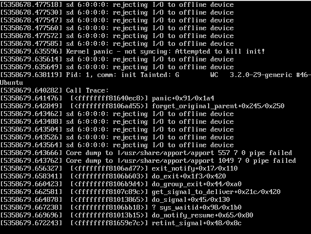

linux
Table of Contents
- 1 linux
- 1.1 proc filesystem
- 1.1.1 /proc
- 1.1.1.1 /proc/meminfo
- 1.1.1.2 /proc/stat
- 1.1.1.3 /proc/swaps
- 1.1.1.4 /proc/cmdline
- 1.1.1.5 /proc/uptime
- 1.1.1.6 /proc/version
- 1.1.1.7 /proc/mounts
- 1.1.1.8 /proc/modules
- 1.1.1.9 /proc/diskstats
- 1.1.1.10 /proc/cpuinfo
- 1.1.1.11 /proc/crypto
- 1.1.1.12 /proc/loadavg
- 1.1.1.13 /proc/locks
- 1.1.1.14 /proc/slabinfo
- 1.1.1.15 /proc/vmstat
- 1.1.1.16 /proc/zoneinfo
- 1.1.2 proc/<pid>
- 1.1.3 /proc/sys
- 1.1.4 /proc/sys/vm
- 1.1.5 /proc/sys/net
- 1.1.6 /proc/sys/fs
- 1.1.7 /proc/sys/kernel
- 1.1.8 /proc/net
- 1.1.1 /proc
- 1.2 system utility
- 1.2.1 mpstat
- 1.2.2 vmstat
- 1.2.3 free
- 1.2.4 dmesg
- 1.2.5 taskset
- 1.2.6 lsof
- 1.2.7 quota
- 1.2.8 crontab
- 1.2.9 hdparm
- 1.2.10 nmon
- 1.2.11 pmap
- 1.2.12 strace
- 1.2.13 uptime
- 1.2.14 top
- 1.2.15 pmap
- 1.2.16 iostat
- 1.2.17 blockdev
- 1.2.18 systemtap
- 1.2.19 latencytop
- 1.2.20 iotop
- 1.2.21 htop
- 1.2.22 cssh
- 1.2.23 dstat
- 1.2.24 slurm
- 1.2.25 sar
- 1.2.26 netstat
- 1.2.27 ifconfig
- 1.2.28 /sbin/ip
- 1.2.29 ping
- 1.2.30 route
- 1.2.31 tcpdump
- 1.2.32 httperf
- 1.2.33 ab
- 1.2.34 autobench
- 1.2.35 iftop
- 1.2.36 iftraf
- 1.2.37 rsync
- 1.2.38 ttyload
- 1.2.39 iodump
- 1.2.40 iopp
- 1.2.41 screen
- 1.2.42 ps(process snapshot)
- 1.2.43 ulimit
- 1.2.44 ntp
- 1.2.45 nethogs
- 1.2.46 slabtop
- 1.2.47 nmon
- 1.2.48 watch
- 1.2.49 collectl
- 1.2.50 vmtouch
- 1.2.51 numactl
- 1.2.52 jnettop
- 1.3 kernel
- 1.4 application
- 1.1 proc filesystem
1 linux
1.1 proc filesystem
1.1.1 /proc
1.1.1.1 /proc/meminfo
系统中关于当前内存的利用状况等的信息，常由free命令使用；可以使用文件查看命令直接读取此文件，其内容显示为两列，前者为统计属性，后者为对应的值；
[blog@umeng-ubuntu-pc] > cat /proc/meminfo MemTotal: 3960316 kB MemFree: 202908 kB Buffers: 53632 kB Cached: 764004 kB SwapCached: 131884 kB Active: 2484752 kB Inactive: 1016724 kB Active(anon): 2280636 kB Inactive(anon): 814792 kB Active(file): 204116 kB Inactive(file): 201932 kB Unevictable: 32 kB Mlocked: 32 kB SwapTotal: 4103164 kB SwapFree: 2678984 kB Dirty: 1492 kB Writeback: 0 kB AnonPages: 2629544 kB Mapped: 122244 kB Shmem: 411588 kB Slab: 125096 kB SReclaimable: 83480 kB SUnreclaim: 41616 kB KernelStack: 5904 kB PageTables: 50164 kB NFS_Unstable: 0 kB Bounce: 0 kB WritebackTmp: 0 kB CommitLimit: 6083320 kB Committed_AS: 7203968 kB VmallocTotal: 34359738367 kB VmallocUsed: 362948 kB VmallocChunk: 34359276724 kB HardwareCorrupted: 0 kB AnonHugePages: 0 kB HugePages_Total: 0 HugePages_Free: 0 HugePages_Rsvd: 0 HugePages_Surp: 0 Hugepagesize: 2048 kB DirectMap4k: 57344 kB DirectMap2M: 4052992 kB
1.1.1.2 /proc/stat
实时追踪自系统上次启动以来的多种统计信息；如下所示，其中，
- “cpu”行后的八个值分别表示以1/100（jiffies）秒为单位的统计值（包括系统运行于用户模式、低优先级用户模式，运系统模式、空闲模式、I/O等待模式的时间等）；
- “intr”行给出中断的信息，第一个为自系统启动以来，发生的所有的中断的次数；然后每个数对应一个特定的中断自系统启动以来所发生的次数；
- “ctxt”给出了自系统启动以来CPU发生的上下文交换的次数。
- “btime”给出了从系统启动到现在为止的时间，单位为秒；
- “processes (total_forks) 自系统启动以来所创建的任务的个数目；
- “procs_running”：当前运行队列的任务的数目；
- “procs_blocked”：当前被阻塞的任务的数目；
[blog@umeng-ubuntu-pc] > cat /proc/stat cpu 25175536 13184 10088010 208990815 1165440 37 29476 0 0 0 cpu0 7597990 7286 3089511 49810301 706702 37 23258 0 0 0 cpu1 7914370 3065 2901460 50300065 188223 0 2403 0 0 0 cpu2 4922712 1228 2039477 54300492 171151 0 1921 0 0 0 cpu3 4740463 1604 2057560 54579955 99363 0 1892 0 0 0 intr 8881387947 2112 3 0 0 0 0 0 0 1 0 0 0 3175452 0 0 0 0 0 0 0 3554144 0 0 224677 0 0 0 0 0 0 0 0 0 0 0 0 0 0 0 0 0 0 0 0 0 0 6681668 12 51519086 12401 0 0 0 0 0 0 0 0 0 0 0 0 0 0 0 0 0 0 0 0 0 0 0 0 0 0 0 0 0 0 0 0 0 0 0 0 0 0 0 0 0 0 0 0 0 0 0 0 0 0 0 0 0 0 0 0 0 0 0 0 0 0 0 0 0 0 0 0 0 0 0 0 0 0 0 0 0 0 0 0 0 0 0 0 0 0 0 0 0 0 0 0 0 0 0 0 0 0 0 0 0 0 0 0 0 0 0 0 0 0 0 0 0 0 0 0 0 0 0 0 0 0 0 0 0 0 0 0 0 0 0 0 0 0 0 0 0 0 0 0 0 0 0 0 0 0 0 0 0 0 0 0 0 0 0 0 0 0 0 0 0 0 0 0 0 0 0 0 0 0 0 0 0 0 0 0 0 0 0 0 0 0 0 0 0 0 0 0 0 0 0 0 0 0 0 0 0 0 0 0 0 0 0 0 0 0 0 0 0 0 0 0 0 0 0 0 0 0 0 0 0 0 0 0 0 0 0 0 0 0 0 0 0 0 0 0 0 0 0 0 0 0 0 0 0 0 0 0 0 0 0 0 0 0 0 0 0 0 0 0 0 0 0 0 0 0 0 0 0 0 0 0 0 0 0 0 0 0 0 0 0 0 0 0 0 0 0 0 0 0 0 0 0 0 0 0 0 0 0 0 0 0 0 0 0 0 0 0 0 0 0 0 0 0 0 0 0 0 0 0 0 0 0 0 0 0 0 0 0 0 0 0 0 0 0 0 0 0 0 0 0 0 0 0 0 0 0 0 0 0 0 0 0 0 0 0 0 0 0 0 0 0 0 0 0 0 0 0 0 0 0 0 0 0 0 0 0 0 0 0 0 0 0 0 0 0 0 0 0 0 0 0 0 0 0 0 0 0 0 0 0 0 0 0 0 0 0 0 0 0 0 0 0 0 0 0 0 0 0 0 0 0 0 0 0 0 0 0 0 0 0 0 0 0 0 0 0 0 0 0 0 0 0 0 0 0 0 0 0 0 0 0 0 0 0 0 0 0 0 0 0 0 0 0 0 0 0 0 0 0 0 0 0 0 0 0 0 0 0 0 0 0 0 0 0 0 0 0 0 0 0 0 0 0 0 0 0 0 0 0 0 0 0 0 0 0 0 0 0 0 0 0 0 0 0 0 0 0 0 0 0 0 0 0 0 0 0 0 0 0 0 0 0 0 0 0 0 0 0 0 0 0 0 0 0 0 0 0 0 0 0 0 0 0 0 0 0 0 0 0 0 0 0 0 0 0 0 0 0 0 0 0 0 0 0 0 0 0 0 0 0 0 0 0 0 0 0 0 0 0 0 0 0 0 0 0 0 0 0 0 0 0 0 0 0 0 0 0 0 0 0 0 0 0 0 0 0 0 0 0 0 0 0 0 0 0 0 0 0 0 0 0 0 0 0 0 0 0 0 0 0 0 0 0 0 0 0 0 0 0 0 0 0 0 0 0 0 0 0 0 0 0 ctxt 12584201613 btime 1345525951 processes 234445 procs_running 3 procs_blocked 0 softirq 304218476 0 151026247 103572 14071723 3554590 0 262575 55846497 864372 78488900
1.1.1.3 /proc/swaps
当前系统上的交换分区及其空间利用信息，如果有多个交换分区的话，则会每个交换分区的信息分别存储于/proc/swap目录中的单独文件中，而其优先级数字越低，被使用到的可能性越大；
[blog@umeng-ubuntu-pc] > cat /proc/swaps Filename Type Size Used Priority /dev/sda5 partition 4103164 1423572 -1
1.1.1.4 /proc/cmdline
在启动时传递至内核的相关参数信息，这些信息通常由lilo或grub等启动管理工具进行传递；
[blog@umeng-ubuntu-pc] > cat /proc/cmdline BOOT_IMAGE=/boot/vmlinuz-3.2.0-27-generic root=UUID=b25db1c7-e694-4eed-8d11-ea33047338cb ro quiet splash vt.handoff=7
1.1.1.5 /proc/uptime
系统上次启动以来的运行时间，如下所示，其第一个数字表示系统运行时间，第二个数字表示系统空闲时间，单位是秒；系统上次启动以来的运行时间，如下所示，其第一个数字表示系统运行时间，第二个数字表示系统空闲时间，单位是秒；
[blog@umeng-ubuntu-pc] > cat /proc/uptime 621137.39 2116303.76
1.1.1.6 /proc/version
当前系统运行的内核版本号
[blog@umeng-ubuntu-pc] > cat /proc/version Linux version 3.2.0-27-generic (buildd@allspice) (gcc version 4.6.3 (Ubuntu/Linaro 4.6.3-1ubuntu5) ) #43-Ubuntu SMP Fri Jul 6 14:25:57 UTC 2012
1.1.1.7 /proc/mounts
系统当前挂载的所有文件系统.第一列表示挂载的设备，第二列表示在当前目录树中的挂载点，第三点表示当前文件系统的类型，第四列表示挂载属性（ro或者rw），第五列和第六列用来匹配/etc/mtab文件中的转储（dump）属性；
[blog@umeng-ubuntu-pc] > cat /proc/mounts rootfs / rootfs rw 0 0 sysfs /sys sysfs rw,nosuid,nodev,noexec,relatime 0 0 proc /proc proc rw,nosuid,nodev,noexec,relatime 0 0 udev /dev devtmpfs rw,relatime,size=1971356k,nr_inodes=492839,mode=755 0 0 devpts /dev/pts devpts rw,nosuid,noexec,relatime,gid=5,mode=620,ptmxmode=000 0 0 tmpfs /run tmpfs rw,nosuid,relatime,size=792064k,mode=755 0 0 /dev/disk/by-uuid/b25db1c7-e694-4eed-8d11-ea33047338cb / ext4 rw,relatime,errors=remount-ro,user_xattr,barrier=1,data=ordered 0 0 none /sys/fs/fuse/connections fusectl rw,relatime 0 0 none /sys/kernel/debug debugfs rw,relatime 0 0 none /sys/kernel/security securityfs rw,relatime 0 0 none /run/lock tmpfs rw,nosuid,nodev,noexec,relatime,size=5120k 0 0 none /run/shm tmpfs rw,nosuid,nodev,relatime 0 0 /dev/sda3 /home ext4 rw,relatime,user_xattr,barrier=1,data=ordered 0 0 binfmt_misc /proc/sys/fs/binfmt_misc binfmt_misc rw,nosuid,nodev,noexec,relatime 0 0 gvfs-fuse-daemon /home/blog/.gvfs fuse.gvfs-fuse-daemon rw,nosuid,nodev,relatime,user_id=1000,group_id=1000 0 0
1.1.1.8 /proc/modules
当前装入内核的所有模块名称列表，可以由lsmod命令使用，也可以直接查看；如下所示，其中第一列表示模块名，第二列表示此模块占用内存空间大小，第三列表示此模块有多少实例被装入，第四列表示此模块依赖于其它哪些模块，第五列表示此模块的装载状态（Live：已经装入；Loading：正在装入；Unloading：正在卸载），第六列表示此模块在内核内存（kernel memory）中的偏移量；
[blog@umeng-ubuntu-pc] > cat /proc/modules pci_stub 12622 1 - Live 0x0000000000000000 vboxpci 23200 0 - Live 0x0000000000000000 (O) vboxnetadp 13382 0 - Live 0x0000000000000000 (O) vboxnetflt 23441 0 - Live 0x0000000000000000 (O) vboxdrv 287082 3 vboxpci,vboxnetadp,vboxnetflt, Live 0x0000000000000000 (O) bnep 18281 2 - Live 0x0000000000000000 rfcomm 47604 0 - Live 0x0000000000000000 bluetooth 180104 10 bnep,rfcomm, Live 0x0000000000000000 binfmt_misc 17540 1 - Live 0x0000000000000000 snd_hda_codec_realtek 223962 1 - Live 0x0000000000000000 ppdev 17113 0 - Live 0x0000000000000000 eeepc_wmi 13109 0 - Live 0x0000000000000000 asus_wmi 24456 1 eeepc_wmi, Live 0x0000000000000000 sparse_keymap 13890 1 asus_wmi, Live 0x0000000000000000 snd_hda_intel 33773 5 - Live 0x0000000000000000 snd_hda_codec 127706 2 snd_hda_codec_realtek,snd_hda_intel, Live 0x0000000000000000 snd_hwdep 13668 1 snd_hda_codec, Live 0x0000000000000000 snd_pcm 97188 3 snd_hda_intel,snd_hda_codec, Live 0x0000000000000000 snd_seq_midi 13324 0 - Live 0x0000000000000000 snd_rawmidi 30748 1 snd_seq_midi, Live 0x0000000000000000 snd_seq_midi_event 14899 1 snd_seq_midi, Live 0x0000000000000000 snd_seq 61896 2 snd_seq_midi,snd_seq_midi_event, Live 0x0000000000000000 snd_timer 29990 2 snd_pcm,snd_seq, Live 0x0000000000000000 snd_seq_device 14540 3 snd_seq_midi,snd_rawmidi,snd_seq, Live 0x0000000000000000 parport_pc 32866 1 - Live 0x0000000000000000 snd 78855 18 snd_hda_codec_realtek,snd_hda_intel,snd_hda_codec,snd_hwdep,snd_pcm,snd_rawmidi,snd_seq,snd_timer,snd_seq_device, Live 0 x0000000000000000 psmouse 87692 0 - Live 0x0000000000000000 serio_raw 13211 0 - Live 0x0000000000000000 soundcore 15091 1 snd, Live 0x0000000000000000 snd_page_alloc 18529 2 snd_hda_intel,snd_pcm, Live 0x0000000000000000 mac_hid 13253 0 - Live 0x0000000000000000 i915 472897 3 - Live 0x0000000000000000 wmi 19256 1 asus_wmi, Live 0x0000000000000000 drm_kms_helper 46978 1 i915, Live 0x0000000000000000 drm 242038 4 i915,drm_kms_helper, Live 0x0000000000000000 i2c_algo_bit 13423 1 i915, Live 0x0000000000000000 mei 41616 0 - Live 0x0000000000000000 (C) video 19596 1 i915, Live 0x0000000000000000 lp 17799 0 - Live 0x0000000000000000 parport 46562 3 ppdev,parport_pc,lp, Live 0x0000000000000000 usbhid 47199 0 - Live 0x0000000000000000 hid 99559 1 usbhid, Live 0x0000000000000000 r8169 62099 0 - Live 0x0000000000000000
1.1.1.9 /proc/diskstats
每块磁盘设备的磁盘I/O统计信息列表
1.1.1.10 /proc/cpuinfo
1.1.1.11 /proc/crypto
系统上已安装的内核使用的密码算法及每个算法的详细信息列表
[blog@umeng-ubuntu-pc] > cat /proc/crypto name : cbc(aes) driver : cbc(aes-generic) module : kernel priority : 100 refcnt : 1 selftest : passed type : blkcipher blocksize : 16 min keysize : 16 max keysize : 32 ivsize : 16 geniv : <default> name : hmac(sha256) driver : hmac(sha256-generic) module : kernel priority : 0 refcnt : 2 selftest : passed type : shash blocksize : 64 digestsize : 32 name : hmac(sha1) driver : hmac(sha1-generic) module : kernel priority : 0 refcnt : 2 selftest : passed type : shash blocksize : 64 digestsize : 20 name : stdrng driver : krng module : kernel priority : 200 refcnt : 1 selftest : passed type : rng seedsize : 0 name : crc32c driver : crc32c-generic module : kernel priority : 100 refcnt : 1 selftest : passed type : shash blocksize : 1 digestsize : 4 name : aes driver : aes-generic module : kernel priority : 100 refcnt : 1 selftest : passed type : cipher blocksize : 16 min keysize : 16 max keysize : 32 name : sha256 driver : sha256-generic module : kernel priority : 0 refcnt : 3 selftest : passed type : shash blocksize : 64 digestsize : 32 name : sha224 driver : sha224-generic module : kernel priority : 0 refcnt : 1 selftest : passed type : shash blocksize : 64 digestsize : 28 name : sha1 driver : sha1-generic module : kernel priority : 0 refcnt : 3 selftest : passed type : shash blocksize : 64 digestsize : 20 name : md5 driver : md5-generic module : kernel priority : 0 refcnt : 1 selftest : passed type : shash blocksize : 64 digestsize : 16 name : crc32c driver : crc32c-intel module : kernel priority : 200 refcnt : 1 selftest : passed type : shash blocksize : 1 digestsize : 4
1.1.1.12 /proc/loadavg
- Linux系统中Load Average含义 – Linux Kernel Exploration http://ilinuxkernel.com/?p=869
保存关于CPU和磁盘I/O的负载平均值，其前三列分别表示每1秒钟、每5秒钟及每15秒的负载平均值，类似于uptime命令输出的相关信息；第四列是由斜线隔开的两个数值，前者表示当前正由内核调度的实体（进程和线程）的数目，后者表示系统当前存活的内核调度实体的数目；第五列表示此文件被查看前最近一个由内核创建的进程的PID.
[blog@umeng-ubuntu-pc] > cat /proc/loadavg 2.46 2.14 2.16 15/736 11012
1.1.1.13 /proc/locks
保存当前由内核锁定的文件的相关信息，包含内核内部的调试数据；每个锁定占据一行，且具有一个惟一的编号；如下输出信息中每行的第二列表示当前锁定使用的锁定类别，POSIX表示目前较新类型的文件锁，由lockf系统调用产生，FLOCK是传统的UNIX文件锁，由flock系统调用产生；第三列也通常由两种类型，ADVISORY表示不允许其他用户锁定此文件，但允许读取，MANDATORY表示此文件锁定期间不允许其他用户任何形式的访问；
[blog@umeng-ubuntu-pc] > cat /proc/locks 1: POSIX ADVISORY WRITE 18536 08:01:1573063 0 9223372036854775806 2: POSIX ADVISORY WRITE 3187 08:03:1970738 0 0 3: POSIX ADVISORY WRITE 3187 08:03:1971423 0 0 4: POSIX ADVISORY WRITE 3187 08:03:1971422 0 0 5: POSIX ADVISORY WRITE 3187 08:03:1971421 0 0 6: POSIX ADVISORY READ 647 08:01:3702340 1073741826 1073742335 7: FLOCK ADVISORY WRITE 28279 08:01:394731 0 EOF 8: POSIX ADVISORY WRITE 25505 08:03:1442453 1073741824 1073742335 9: POSIX ADVISORY READ 25505 08:03:1442317 128 128 10: POSIX ADVISORY READ 25505 08:03:1443015 1073741826 1073742335 11: POSIX ADVISORY READ 25505 08:03:1441997 128 128 12: POSIX ADVISORY READ 25505 08:03:1443023 1073741826 1073742335 13: POSIX ADVISORY READ 25505 08:03:1443008 1073741826 1073742335 14: POSIX ADVISORY WRITE 25505 08:03:1443000 0 EOF 15: POSIX ADVISORY WRITE 18249 08:03:1971018 0 9223372036854775806 16: POSIX ADVISORY WRITE 17989 08:03:1970815 0 9223372036854775806 17: POSIX ADVISORY WRITE 4378 08:03:2492158 1073741824 1073742335 18: POSIX ADVISORY READ 4378 08:03:2491544 1073741826 1073742335 19: POSIX ADVISORY READ 4378 08:03:2492160 128 128 20: POSIX ADVISORY READ 4378 08:03:2491555 1073741826 1073742335 21: POSIX ADVISORY READ 4378 08:03:2491887 128 128 22: POSIX ADVISORY READ 4378 08:03:2491558 1073741826 1073742335 23: POSIX ADVISORY WRITE 4378 08:03:2491537 0 EOF 24: POSIX ADVISORY READ 1945 08:03:1179790 124 124 25: POSIX ADVISORY WRITE 1953 08:03:1179792 0 0 26: POSIX ADVISORY READ 1951 08:03:1179790 128 128 27: POSIX ADVISORY READ 1951 08:03:1179788 1073741826 1073742335 28: POSIX ADVISORY READ 1945 08:03:1179790 128 128 29: POSIX ADVISORY READ 1945 08:03:1179788 1073741826 1073742335 30: POSIX ADVISORY WRITE 997 00:0f:1714 0 EOF 31: FLOCK ADVISORY WRITE 958 00:0f:8496 0 EOF
1.1.1.14 /proc/slabinfo
在内核中频繁使用的对象（如inode、dentry等）都有自己的cache，即slab pool，而/proc/slabinfo文件列出了这些对象相关slap的信息；详情可以参见内核文档中slapinfo的手册页；
[blog@umeng-ubuntu-pc] > sudo cat /proc/slabinfo [sudo] password for blog: slabinfo - version: 2.1 # name <active_objs> <num_objs> <objsize> <objperslab> <pagesperslab> : tunables <limit> <batchcount> <sharedfactor> : sla bdata <active_slabs> <num_slabs> <sharedavail> ip6_dst_cache 100 100 320 25 2 : tunables 0 0 0 : slabdata 4 4 0 UDPLITEv6 0 0 1024 16 4 : tunables 0 0 0 : slabdata 0 0 0 UDPv6 64 64 1024 16 4 : tunables 0 0 0 : slabdata 4 4 0 tw_sock_TCPv6 425 450 320 25 2 : tunables 0 0 0 : slabdata 18 18 0 TCPv6 221 221 1920 17 8 : tunables 0 0 0 : slabdata 13 13 0 flow_cache 0 0 104 39 1 : tunables 0 0 0 : slabdata 0 0 0 kcopyd_job 0 0 3240 10 8 : tunables 0 0 0 : slabdata 0 0 0 dm_uevent 0 0 2608 12 8 : tunables 0 0 0 : slabdata 0 0 0 dm_rq_target_io 0 0 408 20 2 : tunables 0 0 0 : slabdata 0 0 0 cfq_queue 510 510 232 17 1 : tunables 0 0 0 : slabdata 30 30 0 bsg_cmd 0 0 312 26 2 : tunables 0 0 0 : slabdata 0 0 0 mqueue_inode_cache 18 18 896 18 4 : tunables 0 0 0 : slabdata 1 1 0 fuse_request 104 104 608 26 4 : tunables 0 0 0 : slabdata 4 4 0 fuse_inode 46 46 704 23 4 : tunables 0 0 0 : slabdata 2 2 0 ecryptfs_key_record_cache 0 0 576 28 4 : tunables 0 0 0 : slabdata 0 0 0 ecryptfs_inode_cache 0 0 960 17 4 : tunables 0 0 0 : slabdata 0 0 0 hugetlbfs_inode_cache 28 28 576 28 4 : tunables 0 0 0 : slabdata 1 1 0 journal_handle 680 680 24 170 1 : tunables 0 0 0 : slabdata 4 4 0 journal_head 720 720 112 36 1 : tunables 0 0 0 : slabdata 20 20 0 revoke_record 4992 4992 32 128 1 : tunables 0 0 0 : slabdata 39 39 0 ext4_inode_cache 53478 53478 880 18 4 : tunables 0 0 0 : slabdata 2971 2971 0 ext4_free_data 3650 4015 56 73 1 : tunables 0 0 0 : slabdata 55 55 0 ext4_allocation_context 3810 3810 136 30 1 : tunables 0 0 0 : slabdata 127 127 0 ext4_io_end 261 406 1128 29 8 : tunables 0 0 0 : slabdata 14 14 0 ext4_io_page 1284 2816 16 256 1 : tunables 0 0 0 : slabdata 11 11 0 ext3_inode_cache 0 0 776 21 4 : tunables 0 0 0 : slabdata 0 0 0 ext3_xattr 0 0 88 46 1 : tunables 0 0 0 : slabdata 0 0 0 dquot 0 0 256 16 1 : tunables 0 0 0 : slabdata 0 0 0 dnotify_mark 4230 4230 136 30 1 : tunables 0 0 0 : slabdata 141 141 0 dio 100 100 640 25 4 : tunables 0 0 0 : slabdata 4 4 0 pid_namespace 0 0 2128 15 8 : tunables 0 0 0 : slabdata 0 0 0 user_namespace 0 0 1072 30 8 : tunables 0 0 0 : slabdata 0 0 0 UDP-Lite 0 0 832 19 4 : tunables 0 0 0 : slabdata 0 0 0 ip_fib_trie 292 292 56 73 1 : tunables 0 0 0 : slabdata 4 4 0 arp_cache 72 72 448 18 2 : tunables 0 0 0 : slabdata 4 4 0 UDP 76 76 832 19 4 : tunables 0 0 0 : slabdata 4 4 0 tw_sock_TCP 240 240 256 16 1 : tunables 0 0 0 : slabdata 15 15 0 TCP 140 252 1728 18 8 : tunables 0 0 0 : slabdata 14 14 0 blkdev_queue 51 51 1880 17 8 : tunables 0 0 0 : slabdata 3 3 0 blkdev_requests 374 374 368 22 2 : tunables 0 0 0 : slabdata 17 17 0 fsnotify_event 1632 1632 120 34 1 : tunables 0 0 0 : slabdata 48 48 0 bip-256 7 7 4224 7 8 : tunables 0 0 0 : slabdata 1 1 0 bip-128 0 0 2176 15 8 : tunables 0 0 0 : slabdata 0 0 0 bip-64 0 0 1152 28 8 : tunables 0 0 0 : slabdata 0 0 0 bip-16 21 21 384 21 2 : tunables 0 0 0 : slabdata 1 1 0 sock_inode_cache 1149 1300 640 25 4 : tunables 0 0 0 : slabdata 52 52 0 net_namespace 0 0 2560 12 8 : tunables 0 0 0 : slabdata 0 0 0 shmem_inode_cache 2929 3375 640 25 4 : tunables 0 0 0 : slabdata 135 135 0 Acpi-ParseExt 3304 3304 72 56 1 : tunables 0 0 0 : slabdata 59 59 0 Acpi-State 204 204 80 51 1 : tunables 0 0 0 : slabdata 4 4 0 Acpi-Namespace 1428 1428 40 102 1 : tunables 0 0 0 : slabdata 14 14 0 task_delay_info 1764 1764 112 36 1 : tunables 0 0 0 : slabdata 49 49 0 taskstats 96 96 328 24 2 : tunables 0 0 0 : slabdata 4 4 0 proc_inode_cache 3001 3302 624 26 4 : tunables 0 0 0 : slabdata 127 127 0 sigqueue 150 150 160 25 1 : tunables 0 0 0 : slabdata 6 6 0 bdev_cache 76 76 832 19 4 : tunables 0 0 0 : slabdata 4 4 0 sysfs_dir_cache 18480 18480 144 28 1 : tunables 0 0 0 : slabdata 660 660 0 inode_cache 7515 8120 560 29 4 : tunables 0 0 0 : slabdata 280 280 0 dentry 63000 63000 192 21 1 : tunables 0 0 0 : slabdata 3000 3000 0 iint_cache 0 0 112 36 1 : tunables 0 0 0 : slabdata 0 0 0 buffer_head 54221 60684 104 39 1 : tunables 0 0 0 : slabdata 1556 1556 0 vm_area_struct 44863 48047 176 23 1 : tunables 0 0 0 : slabdata 2089 2089 0 mm_struct 252 252 896 18 4 : tunables 0 0 0 : slabdata 14 14 0 files_cache 465 506 704 23 4 : tunables 0 0 0 : slabdata 22 22 0 signal_cache 456 600 1088 30 8 : tunables 0 0 0 : slabdata 20 20 0 sighand_cache 285 315 2112 15 8 : tunables 0 0 0 : slabdata 21 21 0 task_xstate 1631 1824 832 19 4 : tunables 0 0 0 : slabdata 96 96 0 task_struct 758 820 5872 5 8 : tunables 0 0 0 : slabdata 164 164 0 anon_vma 12228 13328 72 56 1 : tunables 0 0 0 : slabdata 238 238 0 shared_policy_node 39239 42670 48 85 1 : tunables 0 0 0 : slabdata 502 502 0 numa_policy 680 680 24 170 1 : tunables 0 0 0 : slabdata 4 4 0 radix_tree_node 11597 15792 568 28 4 : tunables 0 0 0 : slabdata 564 564 0 idr_layer_cache 1320 1320 544 30 4 : tunables 0 0 0 : slabdata 44 44 0 dma-kmalloc-8192 0 0 8192 4 8 : tunables 0 0 0 : slabdata 0 0 0 dma-kmalloc-4096 0 0 4096 8 8 : tunables 0 0 0 : slabdata 0 0 0 dma-kmalloc-2048 0 0 2048 16 8 : tunables 0 0 0 : slabdata 0 0 0 dma-kmalloc-1024 0 0 1024 16 4 : tunables 0 0 0 : slabdata 0 0 0 dma-kmalloc-512 0 0 512 16 2 : tunables 0 0 0 : slabdata 0 0 0 dma-kmalloc-256 0 0 256 16 1 : tunables 0 0 0 : slabdata 0 0 0 dma-kmalloc-128 0 0 128 32 1 : tunables 0 0 0 : slabdata 0 0 0 dma-kmalloc-64 0 0 64 64 1 : tunables 0 0 0 : slabdata 0 0 0 dma-kmalloc-32 0 0 32 128 1 : tunables 0 0 0 : slabdata 0 0 0 dma-kmalloc-16 0 0 16 256 1 : tunables 0 0 0 : slabdata 0 0 0 dma-kmalloc-8 0 0 8 512 1 : tunables 0 0 0 : slabdata 0 0 0 dma-kmalloc-192 0 0 192 21 1 : tunables 0 0 0 : slabdata 0 0 0 dma-kmalloc-96 0 0 96 42 1 : tunables 0 0 0 : slabdata 0 0 0 kmalloc-8192 87 92 8192 4 8 : tunables 0 0 0 : slabdata 23 23 0 kmalloc-4096 200 240 4096 8 8 : tunables 0 0 0 : slabdata 30 30 0 kmalloc-2048 422 544 2048 16 8 : tunables 0 0 0 : slabdata 34 34 0 kmalloc-1024 1154 1280 1024 16 4 : tunables 0 0 0 : slabdata 80 80 0 kmalloc-512 2848 3328 512 16 2 : tunables 0 0 0 : slabdata 208 208 0 kmalloc-256 14079 14704 256 16 1 : tunables 0 0 0 : slabdata 919 919 0 kmalloc-128 3467 6816 128 32 1 : tunables 0 0 0 : slabdata 213 213 0 kmalloc-64 10415 12928 64 64 1 : tunables 0 0 0 : slabdata 202 202 0 kmalloc-32 10224 11648 32 128 1 : tunables 0 0 0 : slabdata 91 91 0 kmalloc-16 4608 4608 16 256 1 : tunables 0 0 0 : slabdata 18 18 0 kmalloc-8 31744 31744 8 512 1 : tunables 0 0 0 : slabdata 62 62 0 kmalloc-192 3055 4368 192 21 1 : tunables 0 0 0 : slabdata 208 208 0 kmalloc-96 4031 4116 96 42 1 : tunables 0 0 0 : slabdata 98 98 0 kmem_cache 32 32 256 16 1 : tunables 0 0 0 : slabdata 2 2 0 kmem_cache_node 128 128 64 64 1 : tunables 0 0 0 : slabdata 2 2 0
1.1.1.15 /proc/vmstat
当前系统虚拟内存的多种统计数据，信息量可能会比较大，这因系统而有所不同，可读性较好；
[blog@umeng-ubuntu-pc] > cat /proc/vmstat nr_free_pages 39606 nr_inactive_anon 207905 nr_active_anon 575539 nr_inactive_file 51308 nr_active_file 51193 nr_unevictable 8 nr_mlock 8 nr_anon_pages 662833 nr_mapped 30562 nr_file_pages 242500 nr_dirty 288 nr_writeback 0 nr_slab_reclaimable 20951 nr_slab_unreclaimable 10401 nr_page_table_pages 12576 nr_kernel_stack 739 nr_unstable 0 nr_bounce 0 nr_vmscan_write 1043356 nr_vmscan_immediate_reclaim 310904 nr_writeback_temp 0 nr_isolated_anon 0 nr_isolated_file 0 nr_shmem 106998 nr_dirtied 14956613 nr_written 13377394 numa_hit 6181305909 numa_miss 0 numa_foreign 0 numa_interleave 5518 numa_local 6181305909 numa_other 0 nr_anon_transparent_hugepages 0 nr_dirty_threshold 92555 nr_dirty_background_threshold 46277 pgpgin 17601663 pgpgout 64310804 pswpin 491621 pswpout 789986 pgalloc_dma 0 pgalloc_dma32 5030620457 pgalloc_normal 1192146375 pgalloc_movable 0 pgfree 6222807408 pgactivate 4825471 pgdeactivate 4561700 pgfault 5884815503 pgmajfault 159176 pgrefill_dma 0 pgrefill_dma32 2727143 pgrefill_normal 3119709 pgrefill_movable 0 pgsteal_dma 0 pgsteal_dma32 4612169 pgsteal_normal 2661815 pgsteal_movable 0 pgscan_kswapd_dma 0 pgscan_kswapd_dma32 6468262 pgscan_kswapd_normal 4573712 pgscan_kswapd_movable 0 pgscan_direct_dma 0 pgscan_direct_dma32 275766 pgscan_direct_normal 246885 pgscan_direct_movable 0 zone_reclaim_failed 0 pginodesteal 0 slabs_scanned 1904768 kswapd_steal 7105516 kswapd_inodesteal 41781 kswapd_low_wmark_hit_quickly 10 kswapd_high_wmark_hit_quickly 980 kswapd_skip_congestion_wait 4130 pageoutrun 147240 allocstall 3159 pgrotated 884823 compact_blocks_moved 0 compact_pages_moved 0 compact_pagemigrate_failed 0 compact_stall 5 compact_fail 3 compact_success 2 htlb_buddy_alloc_success 0 htlb_buddy_alloc_fail 0 unevictable_pgs_culled 0 unevictable_pgs_scanned 0 unevictable_pgs_rescued 74 unevictable_pgs_mlocked 82 unevictable_pgs_munlocked 74 unevictable_pgs_cleared 0 unevictable_pgs_stranded 0 unevictable_pgs_mlockfreed 0 thp_fault_alloc 0 thp_fault_fallback 0 thp_collapse_alloc 0 thp_collapse_alloc_failed 0 thp_split 0
1.1.1.16 /proc/zoneinfo
内存区域（zone）的详细信息列表
[blog@umeng-ubuntu-pc] > cat /proc/zoneinfo
Node 0, zone DMA
pages free 3977
min 65
low 81
high 97
scanned 0
spanned 4080
present 3913
nr_free_pages 3977
nr_inactive_anon 0
nr_active_anon 0
nr_inactive_file 0
nr_active_file 0
nr_unevictable 0
nr_mlock 0
nr_anon_pages 0
nr_mapped 0
nr_file_pages 0
nr_dirty 0
nr_writeback 0
nr_slab_reclaimable 0
nr_slab_unreclaimable 0
nr_page_table_pages 0
nr_kernel_stack 0
nr_unstable 0
nr_bounce 0
nr_vmscan_write 0
nr_vmscan_immediate_reclaim 0
nr_writeback_temp 0
nr_isolated_anon 0
nr_isolated_file 0
nr_shmem 0
nr_dirtied 0
nr_written 0
numa_hit 0
numa_miss 0
numa_foreign 0
numa_interleave 0
numa_local 0
numa_other 0
nr_anon_transparent_hugepages 0
protection: (0, 2906, 3912, 3912)
pagesets
cpu: 0
count: 0
high: 0
batch: 1
vm stats threshold: 6
cpu: 1
count: 0
high: 0
batch: 1
vm stats threshold: 6
cpu: 2
count: 0
high: 0
batch: 1
vm stats threshold: 6
cpu: 3
count: 0
high: 0
batch: 1
vm stats threshold: 6
all_unreclaimable: 1
start_pfn: 16
inactive_ratio: 1
Node 0, zone DMA32
pages free 36397
min 12503
low 15628
high 18754
scanned 0
spanned 1044480
present 744178
nr_free_pages 36397
nr_inactive_anon 122972
nr_active_anon 492944
nr_inactive_file 32614
nr_active_file 31141
nr_unevictable 0
nr_mlock 0
nr_anon_pages 528611
nr_mapped 16731
nr_file_pages 167055
nr_dirty 202
nr_writeback 0
nr_slab_reclaimable 14391
nr_slab_unreclaimable 3764
nr_page_table_pages 5393
nr_kernel_stack 217
nr_unstable 0
nr_bounce 0
nr_vmscan_write 573794
nr_vmscan_immediate_reclaim 248788
nr_writeback_temp 0
nr_isolated_anon 0
nr_isolated_file 0
nr_shmem 74754
nr_dirtied 8249855
nr_written 6854644
numa_hit 5001386683
numa_miss 0
numa_foreign 0
numa_interleave 0
numa_local 5001386683
numa_other 0
nr_anon_transparent_hugepages 0
protection: (0, 0, 1006, 1006)
pagesets
cpu: 0
count: 62
high: 186
batch: 31
vm stats threshold: 36
cpu: 1
count: 171
high: 186
batch: 31
vm stats threshold: 36
cpu: 2
count: 62
high: 186
batch: 31
vm stats threshold: 36
cpu: 3
count: 125
high: 186
batch: 31
vm stats threshold: 36
all_unreclaimable: 0
start_pfn: 4096
inactive_ratio: 4
Node 0, zone Normal
pages free 5426
min 4327
low 5408
high 6490
scanned 0
spanned 261632
present 257544
nr_free_pages 5426
nr_inactive_anon 81011
nr_active_anon 80301
nr_inactive_file 18852
nr_active_file 20072
nr_unevictable 8
nr_mlock 8
nr_anon_pages 131848
nr_mapped 13831
nr_file_pages 71702
nr_dirty 172
nr_writeback 0
nr_slab_reclaimable 6568
nr_slab_unreclaimable 6641
nr_page_table_pages 7176
nr_kernel_stack 523
nr_unstable 0
nr_bounce 0
nr_vmscan_write 469562
nr_vmscan_immediate_reclaim 62116
nr_writeback_temp 0
nr_isolated_anon 0
nr_isolated_file 0
nr_shmem 28316
nr_dirtied 6708910
nr_written 6523845
numa_hit 1183081020
numa_miss 0
numa_foreign 0
numa_interleave 5518
numa_local 1183081020
numa_other 0
nr_anon_transparent_hugepages 0
protection: (0, 0, 0, 0)
pagesets
cpu: 0
count: 41
high: 186
batch: 31
vm stats threshold: 24
cpu: 1
count: 170
high: 186
batch: 31
vm stats threshold: 24
cpu: 2
count: 132
high: 186
batch: 31
vm stats threshold: 24
cpu: 3
count: 185
high: 186
batch: 31
vm stats threshold: 24
all_unreclaimable: 0
start_pfn: 1048576
inactive_ratio: 1
1.1.2 proc/<pid>
其中pid为对应的进程号，目录下面就是这个进程对应的信息。
- attr ???
- auxv ???
- cgroup ???
- clear_refs ???
- cmdline 进程启动运行参数
- coredump_filter ???
- cpuset ???
- cwd 当前目录
- environ 环境变量
- exe 映像文件
- fd 打开fd
- fdinfo 打开fd对应信息(非常少).
- io 读写字节数目以及读写系统调用次数。
- limits 运行环境limits
- loginuid 运行程序用户登录的uid(不是euid).
- maps 进程运行内存镜像图示(文本)
- mountinfo 文件系统挂载信息
- mounts 文件系统挂载信息
- mountstatus 文件系统挂载信息
- net 网络信息
- numa_maps NUMA的内存映射 ???
- oom_adj 出现OOM时进程被kill的权值。范围从[-17,15],越小意味着越不容易被kill。
- oom_score 出现OOM时进程被kill的分值，就是每个进程计算出来的badness。badness越高越容易被kill。
- pagemap 内存映像(二进制),类似于core
- personality ??
- root 根文件系统路径
- sched 进程调度信息
- sessionid ???
- smaps 进程运行内存镜像图示(文本)各个段大小
- stat 当前进程的状态信息
- statm 当前进程占用内存的状态信息
- status 进程运行系统状态
- syscall ???
- task 如果是多线程的话每个线程对应信息
- wchan ???
1.1.2.1 fd
TODO(zhangyan04):
1.1.2.2 io
TODO:
1.1.2.3 limits
TODO:
1.1.2.4 maps
当前进程关联到的每个可执行文件和库文件在内存中的映射区域及其访问权限所组成的列表
00400000-004e0000 r-xp 00000000 08:01 4456452 /bin/bash 006df000-006e0000 r--p 000df000 08:01 4456452 /bin/bash 006e0000-006e9000 rw-p 000e0000 08:01 4456452 /bin/bash 006e9000-006ef000 rw-p 00000000 00:00 0 02411000-024ac000 rw-p 00000000 00:00 0 [heap] 7f81aa605000-7f81aa611000 r-xp 00000000 08:01 5770912 /lib/x86_64-linux-gnu/libnss_files-2.15.so 7f81aa611000-7f81aa810000 ---p 0000c000 08:01 5770912 /lib/x86_64-linux-gnu/libnss_files-2.15.so 7f81aa810000-7f81aa811000 r--p 0000b000 08:01 5770912 /lib/x86_64-linux-gnu/libnss_files-2.15.so 7f81aa811000-7f81aa812000 rw-p 0000c000 08:01 5770912 /lib/x86_64-linux-gnu/libnss_files-2.15.so 7f81aa812000-7f81aa81c000 r-xp 00000000 08:01 5770916 /lib/x86_64-linux-gnu/libnss_nis-2.15.so 7f81aa81c000-7f81aaa1c000 ---p 0000a000 08:01 5770916 /lib/x86_64-linux-gnu/libnss_nis-2.15.so 7f81aaa1c000-7f81aaa1d000 r--p 0000a000 08:01 5770916 /lib/x86_64-linux-gnu/libnss_nis-2.15.so 7f81aaa1d000-7f81aaa1e000 rw-p 0000b000 08:01 5770916 /lib/x86_64-linux-gnu/libnss_nis-2.15.so 7f81aaa1e000-7f81aaa35000 r-xp 00000000 08:01 5770906 /lib/x86_64-linux-gnu/libnsl-2.15.so 7f81aaa35000-7f81aac34000 ---p 00017000 08:01 5770906 /lib/x86_64-linux-gnu/libnsl-2.15.so 7f81aac34000-7f81aac35000 r--p 00016000 08:01 5770906 /lib/x86_64-linux-gnu/libnsl-2.15.so 7f81aac35000-7f81aac36000 rw-p 00017000 08:01 5770906 /lib/x86_64-linux-gnu/libnsl-2.15.so 7f81aac36000-7f81aac38000 rw-p 00000000 00:00 0 7f81aac38000-7f81aac40000 r-xp 00000000 08:01 5770908 /lib/x86_64-linux-gnu/libnss_compat-2.15.so 7f81aac40000-7f81aae3f000 ---p 00008000 08:01 5770908 /lib/x86_64-linux-gnu/libnss_compat-2.15.so 7f81aae3f000-7f81aae40000 r--p 00007000 08:01 5770908 /lib/x86_64-linux-gnu/libnss_compat-2.15.so 7f81aae40000-7f81aae41000 rw-p 00008000 08:01 5770908 /lib/x86_64-linux-gnu/libnss_compat-2.15.so 7f81aae41000-7f81ab524000 r--p 00000000 08:01 2628153 /usr/lib/locale/locale-archive 7f81ab524000-7f81ab6d7000 r-xp 00000000 08:01 5770861 /lib/x86_64-linux-gnu/libc-2.15.so 7f81ab6d7000-7f81ab8d6000 ---p 001b3000 08:01 5770861 /lib/x86_64-linux-gnu/libc-2.15.so 7f81ab8d6000-7f81ab8da000 r--p 001b2000 08:01 5770861 /lib/x86_64-linux-gnu/libc-2.15.so 7f81ab8da000-7f81ab8dc000 rw-p 001b6000 08:01 5770861 /lib/x86_64-linux-gnu/libc-2.15.so 7f81ab8dc000-7f81ab8e1000 rw-p 00000000 00:00 0 7f81ab8e1000-7f81ab8e3000 r-xp 00000000 08:01 5770874 /lib/x86_64-linux-gnu/libdl-2.15.so 7f81ab8e3000-7f81abae3000 ---p 00002000 08:01 5770874 /lib/x86_64-linux-gnu/libdl-2.15.so 7f81abae3000-7f81abae4000 r--p 00002000 08:01 5770874 /lib/x86_64-linux-gnu/libdl-2.15.so 7f81abae4000-7f81abae5000 rw-p 00003000 08:01 5770874 /lib/x86_64-linux-gnu/libdl-2.15.so 7f81abae5000-7f81abb07000 r-xp 00000000 08:01 5770958 /lib/x86_64-linux-gnu/libtinfo.so.5.9 7f81abb07000-7f81abd07000 ---p 00022000 08:01 5770958 /lib/x86_64-linux-gnu/libtinfo.so.5.9 7f81abd07000-7f81abd0b000 r--p 00022000 08:01 5770958 /lib/x86_64-linux-gnu/libtinfo.so.5.9 7f81abd0b000-7f81abd0c000 rw-p 00026000 08:01 5770958 /lib/x86_64-linux-gnu/libtinfo.so.5.9 7f81abd0c000-7f81abd2e000 r-xp 00000000 08:01 5770841 /lib/x86_64-linux-gnu/ld-2.15.so 7f81abf12000-7f81abf15000 rw-p 00000000 00:00 0 7f81abf25000-7f81abf2c000 r--s 00000000 08:01 2884820 /usr/lib/x86_64-linux-gnu/gconv/gconv-modules.cache 7f81abf2c000-7f81abf2e000 rw-p 00000000 00:00 0 7f81abf2e000-7f81abf2f000 r--p 00022000 08:01 5770841 /lib/x86_64-linux-gnu/ld-2.15.so 7f81abf2f000-7f81abf31000 rw-p 00023000 08:01 5770841 /lib/x86_64-linux-gnu/ld-2.15.so 7fffccd69000-7fffccd8a000 rw-p 00000000 00:00 0 [stack] 7fffccdff000-7fffcce00000 r-xp 00000000 00:00 0 [vdso] ffffffffff600000-ffffffffff601000 r-xp 00000000 00:00 0 [vsyscall]
1.1.2.5 mount
TODO:
1.1.2.6 net
TODO(zhangyan04):
1.1.2.7 sched
TODO(zhangyan04):
1.1.2.8 status
TODO:
1.1.2.9 statm
Provides information about memory usage, measured in pages. The columns are:
- size total program size (same as VmSize in /proc/[pid]/status)
- resident resident set size (same as VmRSS in /proc/[pid]/status)
- share shared pages (from shared mappings)
- text text (code)
- lib library (unused in Linux 2.6)
- data data + stack
- dt dirty pages (unused in Linux 2.6)
1.1.3 /proc/sys
在/proc/sys下面有一些可以动态修改的内核参数，有两种方式可以修改这些参数。
首先可以使用sysctl工具来进行修改。比如如果想修改sys/vm/swappiness==0的话，那么可以
blog@blog-virtual-machine:~/github/sperm/essay$ sudo sysctl vm.swappiness=0 [sudo] password for blog: vm.swappiness = 0
上面修改方式是临时的，如果想进行永久修改的话可以修改/etc/sysctl.conf文件
vm.swappiness = 0
然后重启那么这个设置就会永久生效。
1.1.4 /proc/sys/vm
1.1.4.1 /proc/sys/vm/overcommit_memory
所谓的overcommit是过量使用的意思。
- OVERCOMMIT_GUESS=0 用户申请内存的时候，系统会判断剩余的内存有多少。如果不够的话那么就会失败。这种方式是比较保守的，因为有时候比如用户申请1G内存但是可能只是会使用其中1K.
- Heuristic overcommit handling. Obvious overcommits of address space are refused. Used for a typical system. It ensures a seriously wild allocation fails while allowing overcommit to reduce swap usage. root is allowed to allocate slighly more memory in this mode. This is the default.
- OVERCOMMIT_ALWAYS=1 用户申请内存的时候，系统不进行任何检查认为内存足够使用，直到使用内存超过可用内存。
- Always overcommit. Appropriate for some scientific applications.
- OVERCOMMIT_NEVER=2 用户一次申请内存的大小不允许超过<可用内存>的大小。关于这个<可用内存>的大小计算可以看下面overcommit_ration这个参数，可以上面两种所说的可用内存不太一样。
- Don't overcommit. The total address space commit for the system is not permitted to exceed swap + a configurable percentage (default is 50) of physical RAM. Depending on the percentage you use, in most situations this means a process will not be killed while accessing pages but will receive errors on memory allocation as appropriate.
下午将dp3的overcommit_memory参数修改成为2之后，首先出现的问题就是不能够再执行任何shell命令了，错误是fork can't allocate enough memory,就是fork没有那么多的内存可用。然后推出会话之后没有办法再登陆dp3了。这个主要是因为jvm应该基本上占用满了物理内存，而overcommit_ration=0.5,并且没有swap空间，所以没有办法allocate更多的memory了。
从/var/log/syslog里面可以看到，修改了这个参数之后，很多程序受到影响(ganglia挂掉了，cron不能够fork出进程了，init也不能够分配出更多的tty，导致我们没有办法登陆上去）在ganglia里面看到内存以及CPU使用都是一条直线，不是因为系统稳定而是因为gmond挂掉了。
Nov 8 18:07:04 dp3 /usr/sbin/gmond[1664]: [PYTHON] Can't call the metric handler function for [diskstat_sdd_reads] in the python module [diskstat].#012 Nov 8 18:07:04 dp3 /usr/sbin/gmond[1664]: [PYTHON] Can't call the metric handler function for [diskstat_sdd_writes] in the python module [diskstat].#012 Nov 8 18:07:28 dp3 console-kit-daemon[1760]: WARNING: Error writing state file: No space left on device Nov 8 18:07:28 dp3 console-kit-daemon[1760]: WARNING: Cannot write to file /var/run/ConsoleKit/database~ Nov 8 18:07:28 dp3 console-kit-daemon[1760]: WARNING: Unable to spawn /usr/lib/ConsoleKit/run-session.d/pam-foreground-compat.ck: Failed to fork (Cannot allocate memory) Nov 8 18:07:28 dp3 console-kit-daemon[1760]: WARNING: Error writing state file: No space left on device Nov 8 18:07:28 dp3 console-kit-daemon[1760]: WARNING: Cannot write to file /var/run/ConsoleKit/database~ Nov 8 18:07:28 dp3 console-kit-daemon[1760]: WARNING: Cannot unlink /var/run/ConsoleKit/database: No such file or directory Nov 8 18:08:12 dp3 /usr/sbin/gmond[1664]: slurpfile() open() error on file /proc/stat: Too many open files Nov 8 18:08:12 dp3 /usr/sbin/gmond[1664]: update_file() got an error from slurpfile() reading /proc/stat Nov 8 18:08:12 dp3 /usr/sbin/gmond[1664]: slurpfile() open() error on file /proc/stat: Too many open files Nov 8 18:08:12 dp3 /usr/sbin/gmond[1664]: update_file() got an error from slurpfile() reading /proc/stat Nov 8 18:08:12 dp3 /usr/sbin/gmond[1664]: slurpfile() open() error on file /proc/stat: Too many open files Nov 8 18:08:12 dp3 /usr/sbin/gmond[1664]: update_file() got an error from slurpfile() reading /proc/stat Nov 8 18:08:12 dp3 /usr/sbin/gmond[1664]: slurpfile() open() error on file /proc/stat: Too many open files Nov 8 18:08:12 dp3 /usr/sbin/gmond[1664]: update_file() got an error from slurpfile() reading /proc/stat Nov 8 18:08:12 dp3 /usr/sbin/gmond[1664]: slurpfile() open() error on file /proc/stat: Too many open files Nov 8 18:08:12 dp3 /usr/sbin/gmond[1664]: update_file() got an error from slurpfile() reading /proc/stat Nov 8 18:08:12 dp3 kernel: [4319715.969327] gmond[1664]: segfault at ffffffffffffffff ip 00007f52e0066f34 sp 00007fff4e428620 error 4 in libganglia-3.1.2.so.0.0.0[7f52e0060000+13000] Nov 8 18:10:01 dp3 cron[1637]: (CRON) error (can't fork) Nov 8 18:13:53 dp3 init: tty1 main process (2341) terminated with status 1 Nov 8 18:13:53 dp3 init: tty1 main process ended, respawning Nov 8 18:13:53 dp3 init: Temporary process spawn error: Cannot allocate memory
而在hadoop的datanode日志里面，有下面这些错误（只是给出部分exception):
2012-11-08 18:07:01,283 ERROR org.apache.hadoop.hdfs.server.datanode.DataNode: DatanodeRegistration(10.18.10.56:50010, storageID=DS-1599419066-10.18.10.47-50010-1329122718923, infoPort=50075, ipcPort=50020):DataXceiver
java.io.EOFException: while trying to read 65557 bytes
at org.apache.hadoop.hdfs.server.datanode.BlockReceiver.readToBuf(BlockReceiver.java:290)
at org.apache.hadoop.hdfs.server.datanode.BlockReceiver.readNextPacket(BlockReceiver.java:334)
at org.apache.hadoop.hdfs.server.datanode.BlockReceiver.receivePacket(BlockReceiver.java:398)
at org.apache.hadoop.hdfs.server.datanode.BlockReceiver.receiveBlock(BlockReceiver.java:577)
at org.apache.hadoop.hdfs.server.datanode.DataXceiver.writeBlock(DataXceiver.java:480)
at org.apache.hadoop.hdfs.server.datanode.DataXceiver.run(DataXceiver.java:171)
2012-11-08 18:07:02,163 ERROR org.apache.hadoop.hdfs.server.datanode.DataNode: DatanodeRegistration(10.18.10.56:50010, storageID=DS-1599419066-10.18.10.47-50010-1329122718923, infoPort=50075, ipcPort=50020):DataXceiverServer: Exiting due to:java.lang.OutOfMemoryError: unable to create new native thread
at java.lang.Thread.start0(Native Method)
at java.lang.Thread.start(Thread.java:640)
at org.apache.hadoop.hdfs.server.datanode.DataXceiverServer.run(DataXceiverServer.java:131)
at java.lang.Thread.run(Thread.java:662)
2012-11-08 18:07:04,964 ERROR org.apache.hadoop.hdfs.server.datanode.DataNode: DatanodeRegistration(10.18.10.56:50010, storageID=DS-1599419066-10.18.10.47-50010-1329122718923, infoPort=50075, ipcPort=50020):DataXceiver
java.io.InterruptedIOException: Interruped while waiting for IO on channel java.nio.channels.SocketChannel[closed]. 0 millis timeout left.
at org.apache.hadoop.net.SocketIOWithTimeout$SelectorPool.select(SocketIOWithTimeout.java:349)
at org.apache.hadoop.net.SocketIOWithTimeout.doIO(SocketIOWithTimeout.java:157)
at org.apache.hadoop.net.SocketInputStream.read(SocketInputStream.java:155)
at org.apache.hadoop.net.SocketInputStream.read(SocketInputStream.java:128)
at java.io.BufferedInputStream.read1(BufferedInputStream.java:256)
at java.io.BufferedInputStream.read(BufferedInputStream.java:317)
at java.io.DataInputStream.read(DataInputStream.java:132)
at org.apache.hadoop.hdfs.server.datanode.BlockReceiver.readToBuf(BlockReceiver.java:287)
at org.apache.hadoop.hdfs.server.datanode.BlockReceiver.readNextPacket(BlockReceiver.java:334)
at org.apache.hadoop.hdfs.server.datanode.BlockReceiver.receivePacket(BlockReceiver.java:398)
at org.apache.hadoop.hdfs.server.datanode.BlockReceiver.receiveBlock(BlockReceiver.java:577)
at org.apache.hadoop.hdfs.server.datanode.DataXceiver.writeBlock(DataXceiver.java:480)
at org.apache.hadoop.hdfs.server.datanode.DataXceiver.run(DataXceiver.java:171)
2012-11-08 18:07:04,965 INFO org.apache.hadoop.hdfs.server.datanode.DataNode: PacketResponder blk_-1079258682690587867_32990729 1 Exception java.io.EOFException
at java.io.DataInputStream.readFully(DataInputStream.java:180)
at java.io.DataInputStream.readLong(DataInputStream.java:399)
at org.apache.hadoop.hdfs.protocol.DataTransferProtocol$PipelineAck.readFields(DataTransferProtocol.java:120)
at org.apache.hadoop.hdfs.server.datanode.BlockReceiver$PacketResponder.run(BlockReceiver.java:937)
at java.lang.Thread.run(Thread.java:662)
2012-11-08 18:07:05,057 INFO org.apache.hadoop.hdfs.server.datanode.DataNode: PacketResponder blk_1523791863488769175_32972264 1 Exception java.nio.channels.ClosedChannelException
at sun.nio.ch.SocketChannelImpl.ensureWriteOpen(SocketChannelImpl.java:133)
at sun.nio.ch.SocketChannelImpl.write(SocketChannelImpl.java:324)
at org.apache.hadoop.net.SocketOutputStream$Writer.performIO(SocketOutputStream.java:55)
at org.apache.hadoop.net.SocketIOWithTimeout.doIO(SocketIOWithTimeout.java:142)
at org.apache.hadoop.net.SocketOutputStream.write(SocketOutputStream.java:146)
at org.apache.hadoop.net.SocketOutputStream.write(SocketOutputStream.java:107)
at java.io.BufferedOutputStream.flushBuffer(BufferedOutputStream.java:65)
at java.io.BufferedOutputStream.flush(BufferedOutputStream.java:123)
at java.io.DataOutputStream.flush(DataOutputStream.java:106)
at org.apache.hadoop.hdfs.server.datanode.BlockReceiver$PacketResponder.run(BlockReceiver.java:1047)
at java.lang.Thread.run(Thread.java:662)
2012-11-08 18:07:04,972 ERROR org.apache.hadoop.hdfs.server.datanode.DataNode: DatanodeRegistration(10.18.10.56:50010, storageID=DS-1599419066-10.18.10.47-50010-1329122718923, infoPort=5
0075, ipcPort=50020):DataXceiver
java.io.IOException: Interrupted receiveBlock
at org.apache.hadoop.hdfs.server.datanode.BlockReceiver.receiveBlock(BlockReceiver.java:622)
at org.apache.hadoop.hdfs.server.datanode.DataXceiver.writeBlock(DataXceiver.java:480)
at org.apache.hadoop.hdfs.server.datanode.DataXceiver.run(DataXceiver.java:171)
2012-11-08 18:08:02,003 INFO org.apache.hadoop.hdfs.server.datanode.DataNode: Waiting for threadgroup to exit, active threads is 1
2012-11-08 18:08:02,025 WARN org.apache.hadoop.util.Shell: Could not get disk usage information
java.io.IOException: Cannot run program "du": java.io.IOException: error=12, Cannot allocate memory
at java.lang.ProcessBuilder.start(ProcessBuilder.java:460)
at org.apache.hadoop.util.Shell.runCommand(Shell.java:200)
at org.apache.hadoop.util.Shell.run(Shell.java:182)
at org.apache.hadoop.fs.DU.access$200(DU.java:29)
at org.apache.hadoop.fs.DU$DURefreshThread.run(DU.java:84)
at java.lang.Thread.run(Thread.java:662)
Caused by: java.io.IOException: java.io.IOException: error=12, Cannot allocate memory
at java.lang.UNIXProcess.<init>(UNIXProcess.java:148)
at java.lang.ProcessImpl.start(ProcessImpl.java:65)
at java.lang.ProcessBuilder.start(ProcessBuilder.java:453)
接着之后就一直打印下面日志hang住了
2012-11-08 18:08:52,015 INFO org.apache.hadoop.hdfs.server.datanode.DataNode: Waiting for threadgroup to exit, active threads is 1
hdfs web页面上面显示dead node,但是实际上这个datanode进程还存活。原因估计也是因为不能够分配足够的内存出现这些问题的吧。
最后可以登陆上去的原因，我猜想应该是datanode挂掉了，上面的regionserver暂时没有分配内存所以有足够的内存空间，init可以开辟tty。
现在已经将这个值调整成为原来的值，也就是0。索性的是，在这个期间，这个修改对于线上的任务执行没有什么影响。
1.1.4.2 /proc/sys/vm/overcommit_ratio
如果overcommit_memory值为2的话，那么这个参数决定了系统的<可用内存>的大小。计算方式是 (Physical-RAM-Size) * ratio / 100 + (Swap-Size).
blog@blog-virtual-machine:~/github/sperm/essay$ free -m
total used free shared buffers cached
Mem: 491 484 6 0 43 296
-/+ buffers/cache: 145 346
Swap: 509 0 509
blog@blog-virtual-machine:~/github/sperm/essay$ cat /proc/sys/vm/overcommit_ratio
50
所以对于我这个系统来说，可用的虚拟内存在(491*50/100)+509=754M. NOTE(blog):这个仅仅是在overcommit_memory=2的时候估算的<可用内存>大小， 实际上对于其他情况来说可用内存大小还是(Physical-RAM-Size) + (Swap-Size).
1.1.4.3 /proc/sys/vm/swappiness
这个参数决定系统使用swap的程度。但是这个参数并没有禁止使用swap分区，而只是一个依赖于swap分区的程度。 如果这个值设置成为0的话那么，那么系统会尽可能地将减少page swap in/out操作，将更多的内存操作于物理内存上面。
1.1.4.4 /proc/sys/vm/dirty_*
这几个参数主要是用来控制脏页刷回磁盘策略。关于脏页刷回磁盘的过程可以参看"文件IO/write"一节。
NOTE(blog@2013-05-25):我copy了一份内容过来
对于这些脏页的写回策略是：
- 首先判断脏页比例是否超过dirty_ratio.如果没有的话那么直接退出
- 然后开始将脏页刷到磁盘直到比率小于dirty_ratio.（此时write会阻塞）
- 判断脏页比例是否超过dirty_background_ratio或者是超过dirty_background_bytes.如果没有那么退出。
- 如果超过的话那么就会启动pdflush daemon后台进程刷新脏页。（此时write不会阻塞）
注意到这里可能启动pdflush daemon在后台刷新脏页。另外系统每隔dirty_writeback_centisecs时间会启动 pdflush daemon将脏页刷到磁盘上面。而pdflush daemon工作方式是这样的，检查脏页是否存在超过 dirty_expire_centisecs时间的，如果超过的话那么就会在后台刷新这些脏页。
1.1.4.5 /proc/sys/vm/drop_caches
可以用来释放kernel保存的buffers和cached memory，buffers保存的是目录以及文件的inode，cached memory保存的是操作文件时候使用的pagecache
- 0 // 释放cached memory
- 1 // 释放buffers
- 2 // 释放两者
为了防止数据丢失，可以在修改这个文件之前先调用sync强制写盘
1.1.4.6 /proc/sys/vm/panic_on_oom
- OOM Killer - linux-mm.org Wiki http://linux-mm.org/OOM_Killer
- Taming the OOM killer [LWN.net] http://lwn.net/Articles/317814/
- /proc/sys/vm/oom_victim 通过在这个地方指定名字来优先kill
- OOM control group (cgroup) 通过将process划分到某个group为这个group制定权值
- mem_notify 如果出现OOM情况的话可以通知到userspace
- cgroup OOM notifier 允许某个task来监控一群tasks，如果出现OOM的话会通知这个task
- /dev/mem_notify 这个设备文件上面包含内存事件，task可以poll这个文件来获取通知
- Linux 的 Out-of-Memory (OOM) Killer - DBA Notes http://www.dbanotes.net/database/linux_outofmemory_oom_killer.html
- OOM killer "Out of Memory: Killed process" SOLUTIONS / SUMMARY http://www.redaht.com/archives/redhat-list/2007-August/msg00060.html
- 情况主要是在32位机器下面LowMem不够使用出现OOM的情况。 TODO（blog）：不太清楚这个LowMem是物理还是虚拟内存
- LinuxDevCenter.com: When Linux Runs Out of Memory http://linuxdevcenter.com/lpt/a/6808
- Respite from the OOM killer [LWN.net] http://lwn.net/Articles/104179/ NOTE（blog）：似乎overcommit_memory设置成为2也不能够完全避免OOM
This enables or disables panic on out-of-memory feature.
If this is set to 0, the kernel will kill some rogue process, called oom_killer. Usually, oom_killer can kill rogue processes and system will survive.
If this is set to 1, the kernel panics when out-of-memory happens. However, if a process limits using nodes by mempolicy/cpusets, and those nodes become memory exhaustion status, one process may be killed by oom-killer. No panic occurs in this case. Because other nodes' memory may be free. This means system total status may be not fatal yet.
If this is set to 2, the kernel panics compulsorily even on the above-mentioned.
The default value is 0. 1 and 2 are for failover of clustering. Please select either according to your policy of failover.
NOTE(blog):对于1，2不是很理解，可能是用于分布式集群Linux系统上面的策略
1.1.5 /proc/sys/net
1.1.5.1 /proc/sys/net/ipv4/ip_local_port_range
本地port分配范围.
1.1.5.2 /proc/sys/net/ipv4/tcp_tw_reuse
重复使用处于TIME_WAIT的socket.
Allow to reuse TIME_WAIT sockets for new connections when it is safe from protocol viewpoint.
1.1.5.3 /proc/sys/net/ipv4/tcp_tw_recycle
快速回收处理TIME_WAIT的socket.
Enable fast recycling of TIME_WAIT sockets.
1.1.5.4 /proc/sys/net/ipv4/tcp_max_syn_backlog
等待client做ack的连接数目上限
1.1.5.5 /proc/sys/net/core/somaxconn
每个端口监听队列的最大长度。
1.1.5.6 /proc/sys/net/core/netdev_max_backlog
网络设备接收数据包的速率比内核处理这些包的速率快时，允许送到队列的数据包的最大数目。
1.1.6 /proc/sys/fs
1.1.6.1 /proc/sys/fs/file-max
所有进程允许打开文件的最大数量 NOTE（blog）：这个应该是和文件描述符有区别的
1.1.6.2 /proc/sys/fs/epoll/max_user_instances
单个用户使用epoll的文件描述符上限。如果超过上限会返回EMFILE错误。 NOTE（blog）：不过在我的文件系统下面似乎没有这个选项
1.1.6.3 /proc/sys/fs/epoll/max_user_watches
单个用户使用epoll进行watch的文件描述符上限。 NOTE（blog）：对于服务器应该特别有用，可以限制内存使用量
This specifies a limit on the total number of file descriptors that a user can register across all epoll instances
on the system. The limit is per real user ID. Each registered file descriptor costs roughly 90 bytes on a 32-bit
kernel, and roughly 160 bytes on a 64-bit kernel. Currently, the default value for max_user_watches is 1/25 (4%)
of the available low memory, divided by the registration cost in bytes.
1.1.7 /proc/sys/kernel
1.1.7.1 /proc/sys/kernel/hung_task_timeout_secs
Detecting hung tasks in Linux
Sometimes tasks under Linux are blocked forever (essentially hung). Recent Linux kernels have an infrastructure to detect hung tasks. When this infrastructure is active it will periodically get activated to find out hung tasks and present a stack dump of those hung tasks (and maybe locks held). Additionally we can choose to panic the system when we detect atleast one hung task in the system. I will try to explain how khungtaskd works.
The infrastructure is based on a single kernel thread named as “khungtaskd”. So if you do a ps in your system and see that there is entry like [khungtaskd] you know it is there. I have one in my system: "136 root SW [khungtaskd]"
The loop of the khungtaskd daemon is a call to the scheduler for waking it up after ever 120 seconds (default value). The core algorithm is like this:
- Iterate over all the tasks in the system which are marked as TASK_UNINTERRUPTIBLE (additionally it does not consider UNINTERRUPTIBLE frozen tasks & UNINTERRUPTIBLE tasks that are newly created and never been scheduled out).
- If a task has not been switched out by the scheduler atleast once in the last 120 seconds it is considered as a hung task and its stack dump is displayed. If CONFIG_LOCKDEP is defined then it will also show all the locks the hung task is holding.
One can change the sampling interval of khungtaskd through the sysctl interface /proc/sys/kernel/hung_task_timeout_secs.
之前在hdfs一个datanode上面出现了磁盘损坏问题，然后在syslog里面发现了下面日志
May 14 00:02:50 dp46 kernel: INFO: task jbd2/sde1-8:3411 blocked for more than 120 seconds. May 14 00:02:50 dp46 kernel: "echo 0 > /proc/sys/kernel/hung_task_timeout_secsmahung_task_timeout_secs" disables this message. May 14 00:02:50 dp46 kernel: jbd2/sde1-8 D 0000000000000000 0 3411 2 0x00000000 May 14 00:02:50 dp46 kernel: ffff880817a71a80 0000000000000046 ffff880096d12f00 0000000000000441 May 14 00:02:50 dp46 kernel: ffff880818052938 ffff880818052848 ffff88081805c3b8 ffff88081805c3b8 May 14 00:02:50 dp46 kernel: ffff88081b22e6b8 ffff880817a71fd8 000000000000f4e8 ffff88081b22e6b8 May 14 00:02:50 dp46 kernel: Call Trace: May 14 00:02:50 dp46 kernel: [<ffffffff8109b809>] ? ktime_get_ts+0xa9/0xe0 May 14 00:02:50 dp46 kernel: [<ffffffff81110b10>] ? sync_page+0x0/0x50 May 14 00:02:50 dp46 kernel: [<ffffffff814ed1e3>] io_schedule+0x73/0xc0 May 14 00:02:50 dp46 kernel: [<ffffffff81110b4d>] sync_page+0x3d/0x50 May 14 00:02:50 dp46 kernel: [<ffffffff814eda4a>] __wait_on_bit_lock+0x5a/0xc0 May 14 00:02:50 dp46 kernel: [<ffffffff81110ae7>] __lock_page+0x67/0x70 May 14 00:02:50 dp46 kernel: [<ffffffff81090c30>] ? wake_bit_function+0x0/0x50 May 14 00:02:50 dp46 kernel: [<ffffffff811271a5>] ? pagevec_lookup_tag+0x25/0x40 May 14 00:02:50 dp46 kernel: [<ffffffff811261f2>] write_cache_pages+0x392/0x4a0 May 14 00:02:50 dp46 kernel: [<ffffffff81124c80>] ? __writepage+0x0/0x40 May 14 00:02:50 dp46 kernel: [<ffffffff81126324>] generic_writepages+0x24/0x30 May 14 00:02:50 dp46 kernel: [<ffffffffa00774d7>] journal_submit_inode_data_buffers+0x47/0x50 [jbd2] May 14 00:02:50 dp46 kernel: [<ffffffffa00779e5>] jbd2_journal_commit_transaction+0x375/0x14b0 [jbd2] May 14 00:02:50 dp46 kernel: [<ffffffff8100975d>] ? __switch_to+0x13d/0x320 May 14 00:02:50 dp46 kernel: [<ffffffff8107c0ec>] ? lock_timer_base+0x3c/0x70 May 14 00:02:50 dp46 kernel: [<ffffffff81090bf0>] ? autoremove_wake_function+0x0/0x40 May 14 00:02:50 dp46 kernel: [<ffffffffa007d928>] kjournald2+0xb8/0x220 [jbd2] May 14 00:02:50 dp46 kernel: [<ffffffff81090bf0>] ? autoremove_wake_function+0x0/0x40 May 14 00:02:50 dp46 kernel: [<ffffffffa007d870>] ? kjournald2+0x0/0x220 [jbd2] May 14 00:02:50 dp46 kernel: [<ffffffff81090886>] kthread+0x96/0xa0 May 14 00:02:50 dp46 kernel: [<ffffffff8100c14a>] child_rip+0xa/0x20 May 14 00:02:50 dp46 kernel: [<ffffffff810907f0>] ? kthread+0x0/0xa0 May 14 00:02:50 dp46 kernel: [<ffffffff8100c140>] ? child_rip+0x0/0x20
The JBD is the journaling block device that sits between the file system and the block device driver. The jbd2 version is for ext4.
1.1.8 /proc/net
1.1.8.1 /proc/net/tcp
记录所有tcp连接，netstat以及lsof都会读取这个文件. 我们遇到过一个问题就是netstat/lsof速度非常慢，通过strace发现是在读取这个文件时候非常耗时，下面两个链接给出了一些相关信息
- [PATCH] tcp: Fix slowness in read /proc/net/tcp — Linux Network Development : http://www.spinics.net/lists/netdev/msg132186.html
- Linux-Kernel Archive: Awfully slow /proc/net/tcp, netstat, in.i : http://lkml.indiana.edu/hypermail/linux/kernel/0110.2/0475.html
TODO(blog):
1.2 system utility

1.2.1 mpstat
mpstat - Report processors related statistics.
mpstat -P [cpu|ALL] -V internal count
- -P 能够选择特定的CPU来察看,或者是察看所有的CPU
- internal 表示多少秒显示一次
- count 表示显示多少次
通常使用就是"mpstat -P ALL 1"
[zhangyan@tc-cm-et18.tc.baidu.com]$ mpstat -P ALL 1 Linux 2.6.9_5-10-0-1 (tc-cm-et18.tc.baidu.com) 2011年09月20日 08时39分58秒 CPU %user %nice %system %iowait %irq %soft %idle intr/s 08时39分59秒 all 37.55 0.00 0.00 0.00 0.00 0.00 62.45 1009.00 08时39分59秒 0 0.00 0.00 0.00 0.00 0.00 0.00 100.00 1002.00 08时39分59秒 1 100.00 0.00 0.00 0.00 0.00 0.00 0.00 0.00 08时39分59秒 2 0.00 0.00 0.00 0.00 0.00 0.00 100.00 7.00 08时39分59秒 3 100.00 0.00 0.00 0.00 0.00 0.00 0.00 0.00 08时39分59秒 4 100.00 0.00 0.00 0.00 0.00 0.00 0.00 0.00 08时39分59秒 5 0.00 0.00 0.00 0.00 0.00 0.00 100.00 0.00 08时39分59秒 6 0.00 0.00 0.00 0.00 0.00 0.00 99.00 0.00 08时39分59秒 7 0.00 0.00 0.00 0.00 0.00 0.00 100.00 0.00
其中每个字段的意思分别是：
- CPU 处理器编号
- %user 处理user状态占用率
- %nice 处理user状态并且是nice priority占用率
- %system 处理system状态占用率(不包括硬中断和软中断)
- %iowait 在进行io操作时候有cpu idle时间比率
- %irq CPU耗费在硬中断上时间比率
- %soft CPU耗费在软中断上时间比率(软中断可以被任何一个CPU处理)
- %idle 在没有io操作时候的cpu idle时间比率
- intr/s 每秒CPU中断次数(包括硬中断和软终端)
1.2.2 vmstat
vmstat [-a] [-n] [-S unit] [delay [ count]] // 查看全局内存开销 vmstat [-f] // 查看自从boot依赖forks的次数(fork,vfork,clone)，可以认为就是创建的task数目(包括线程) vmstat [-s] // 系统事件统计次数以及内存统计 vmstat [-d] // 磁盘使用统计数据 vmstat [-m] // 内核开辟对象slabinfo
[blog@localhost.localdomain]$ vmstat 1 procs -----------memory---------- ---swap-- -----io---- --system-- -----cpu------ r b swpd free buff cache si so bi bo in cs us sy id wa st 0 0 4 45752 33460 99324 0 0 1 1 1 9 0 0 99 0 0 0 0 4 45752 33460 99324 0 0 0 0 1 8 0 0 100 0 0
- r 多少个进程正在等待运行
- b 多少个进程block住了
- swpd 虚拟内存(swap)
- free 空闲内存
- buff 缓冲内存(buffers,用户缓存文件inode)
- cache 缓冲内存(cache,用户作为文件系统page-cache)
- 前面三个参数相加才是可用内存大小
- si 读取disk使用的虚拟内存
- so 写disk使用的虚拟内存
- bi[block in] 块设备读取速率,blocks/s
- bo[block out] 块设备写速度,blocks/s
- in[interrupt] 每秒中断个数
- cs[context switch] 每秒上下文切换次数
- us 用户态时间[user]
- sy 系统时间[system]
- id 空闲时间[idle]
- wa 等待io时间[wait IO]
- st 虚拟机使用时间[stolen from VM]
[zhangyan04@tc-hpc-dev.tc.baidu.com]$ vmstat -d
disk- ------------reads------------ ------------writes----------- -----IO------
total merged sectors ms total merged sectors ms cur sec
sda 13873 1504 633974 37617 1366407 89873356 108823150 37820617 0 323
sda1 46 88 1072 34 0 0 0 0 0 0
sda2 10274 242 595386 24867 34050 35092 2474128 1078425 0 239
sda3 3515 1125 36820 12653 1332349 89838264 106349006 36742192 0 292
- total 总共发起读写次数
- merged 聚合读写次数
- sectors 读写多少扇区
- ms 耗时毫秒
- cur 当前是否存在IO操作
- sec 耗费在IO的时间(秒)
[zhangyan04@tc-hpc-dev.tc.baidu.com]$ vmstat -m Cache Num Total Size Pages nfs_direct_cache 0 0 168 24 nfs_write_data 69 69 704 23
- Num 当前多少个对象正在被使用
- Total 总共有多少个对象可以被使用
- Size 每个对象大小
- Pages 占用了多少个Page(这个Page上面至少包含一个正在被使用的对象)
[zhangyan04@tc-hpc-dev.tc.baidu.com]$ vmstat -s
8191996 total memory
4519256 used memory
1760044 active memory
2327204 inactive memory
3672740 free memory
76200 buffer memory
3935788 swap cache
1020088 total swap
0 used swap
1020088 free swap
423476 non-nice user cpu ticks
91 nice user cpu ticks
295803 system cpu ticks
70621941 idle cpu ticks
39354 IO-wait cpu ticks
800 IRQ cpu ticks
52009 softirq cpu ticks
317179 pages paged in
54413375 pages paged out
0 pages swapped in
0 pages swapped out
754373489 interrupts
500998741 CPU context switches
1323083318 boot time
418742 forks
1.2.3 free
[zhangyan04@tc-hpc-dev.tc.baidu.com]$ free -t
total used free shared buffers cached
Mem: 8191996 4519868 3672128 0 76204 3935864
-/+ buffers/cache: 507800 7684196
Swap: 1020088 0 1020088
Total: 9212084 4519868 4692216
- total 总内存大小[实际内存大小]
- used 已经使用大小[buffers+shared+cached+应用程序使用]
- free 未使用大小
- shared 共享内存大小
- buffers 缓存大小包括目录inode
- cached 用于操作文件使用缓冲[所谓cached的内容还是可以被使用的]
- - buffers/cache 表示used-buffers/cached的大小，就是应用程序已经使用内存大小
- + buffers/cache 表示free+buffers/cached的大小，就是所有可供应用程序使用的大小
- Swap:total 交换分区大小
- Swap:used 交换分区使用大小
- Swap:free 可以使用的分区大小
1.2.4 dmesg
能够察看开机时启动信息(启动信息保存在/var/log/dmesg文件里)
[blog@localhost.localdomain]$ dmesg | less Linux version 2.6.23.1-42.fc8 (kojibuilder@xenbuilder4.fedora.phx.redhat.com) (gcc version 4.1.2 20070925 (Red Hat 4.1.2-33)) #1 SMP Tue Oct 30 13:55:12 EDT 2007 BIOS-provided physical RAM map: BIOS-e820: 0000000000000000 - 000000000009f800 (usable) BIOS-e820: 000000000009f800 - 00000000000a0000 (reserved) BIOS-e820: 00000000000ca000 - 00000000000cc000 (reserved) BIOS-e820: 00000000000dc000 - 0000000000100000 (reserved) BIOS-e820: 0000000000100000 - 000000000fef0000 (usable) BIOS-e820: 000000000fef0000 - 000000000feff000 (ACPI data) BIOS-e820: 000000000feff000 - 000000000ff00000 (ACPI NVS) BIOS-e820: 000000000ff00000 - 0000000010000000 (usable) BIOS-e820: 00000000fec00000 - 00000000fec10000 (reserved) BIOS-e820: 00000000fee00000 - 00000000fee01000 (reserved) BIOS-e820: 00000000fffe0000 - 0000000100000000 (reserved)
1.2.5 taskset
可以用来获取和修改进程的CPU亲和性。
- taskset -c 1,2,3 cmd (指定在CPU #1,#2,#3上运行cmd)
- taskset -cp 1,2,3 pid (指定在CPU #1,#2,#3上运行进程pid)
- taskset -c mask cmd|pid 通过mask格式进行设置，比如0x3就是#0和#1亲和性
如果不指定-c的话那么就是获取亲和性。程序上的话可以使用sched_setaffinity/sched_getaffinity调用来修改和获取某个进程和CPU的亲和性。
taskset is used to set or retrieve the CPU affinity of a running pro- cess given its PID or to launch a new COMMAND with a given CPU affin- ity. CPU affinity is a scheduler property that "bonds" a process to a given set of CPUs on the system. The Linux scheduler will honor the given CPU affinity and the process will not run on any other CPUs. Note that the Linux scheduler also supports natural CPU affinity: the scheduler attempts to keep processes on the same CPU as long as prac- tical for performance reasons. Therefore, forcing a specific CPU affinity is useful only in certain applications.
1.2.6 lsof
TODO(zhangyan04):
1.2.7 quota
http://blog.itpub.net/post/7184/488931
quota用来为用户编辑磁盘配额。
- 初始化磁盘配额功能
修改/etc/fstab增加usrquota以及grpquota
/dev/hdb1 /home/extra ext3 defaults,noatime,usrquota,grpquota 1 2
- 建立磁盘配额文件
# cd /home/extra # touch aquota.user # touch aquota.group # chmod 600 aquota.user # chmod 600 aquota.group
- 重新挂载磁盘。mount -o remount /home/extra
- 扫描磁盘，初始化磁盘配额表。修改之前建立的aquota文件。/sbin/quotacheck -uvg /home/extra
- 编辑用户磁盘配额
如果为用户设定可以使用/usr/sbin/edquota -u testuser,如果需要为群组设定的话/usr/sbin/edquota -g testgrp.
Disk quotas for user testuser (uid 517): Filesystem blocks soft hard inodes soft hard /dev/hdb1 0 0 0 0 0 0
各个字段含义如下：
- blocks：已经使用的磁盘块(1k bytes)
- soft：软限额大小，如果用户超出了这个限额，系统会发出警告，如果在设定的时间内还没有回到该限额以下，系统将拒绝该用户使用额外的磁盘空间。
- hard：硬限额，用户不允许超出的磁盘限制
- inodes：用户已经使用的inodes数
- soft和hard含义同上，不过，这里是限制用户创建的文件/目录总数。
可以使用/usr/sbin/edquota -t来修改软限额期限。
- 启动磁盘配额可以使用/sbin/quotaon -av,关闭磁盘配额可以使用/sbin/quotaoff -av.
- 查看整体磁盘配额可以使用/usr/sbin/repquota -a,查看用户配额情况可以使用quota -vu test
可以对WWW空间，FTP空间，Email空间进行磁盘配额限制。Quota只能基于磁盘分区进行配额管理，不能基于目录进行配额管理，因此只能把数据存放在有配额限制的分区，再用符号链接到实际应用的目录。
1.2.8 crontab
crontab就是为了能够使得工作自动化在特定的时间或者是时间间隔执行特定的程序。crontab -e就可以编辑crontab配置文件，默认是vim编辑器。crontab配置文件里面可以像shell一样定义变量，之后就是任务描述，每一个任务分为6个字段: minute hour day month week command
- minute范围是0-59
- hour范围是0-23
- day范围是1-31
- month范围是1-12
- week范围是0-7[0/7表示Sun]
对于每个字段可以有3种表示方式
- - 表示匹配所有时间
- num 表示完全匹配
- num1-num2 表示匹配范围
- num1,num2,num3… 进行枚举匹配
- num1-num2/interval 表示从num1-num2时间段内每interval间隔
对于系统级别的crontab配置文件在/etc/crontab貌似里面还多了一个用户字段.下面是几个配置的例子:
0 6 * * * /home/blog/platform/apache/bin/apachectl restart 每天早上6点重启apache 0,30 18-23 * * * /home/blog/platform/apache/bin/apachectl restart 每天18-23时候每隔半小时重启apache \* 23-7/1 * * * /* 23-7/1 * * * /usr/local/apache/bin/apachectl restart 每天从23到次日7点每隔一小时重启apache
1.2.9 hdparm
hdparm - get/set hard disk parameters
下面是使用的用法
/sbin/hdparm [ flags ] [device] ..
对于device的话可以通过mount来查看
[blog@localhost.localdomain]$ mount /dev/mapper/VolGroup00-LogVol00 on / type ext3 (rw) proc on /proc type proc (rw) sysfs on /sys type sysfs (rw) devpts on /dev/pts type devpts (rw,gid=5,mode=620) /dev/sda1 on /boot type ext3 (rw) tmpfs on /dev/shm type tmpfs (rw) none on /proc/sys/fs/binfmt_misc type binfmt_misc (rw) sunrpc on /var/lib/nfs/rpc_pipefs type rpc_pipefs (rw)
我们关注自己读写目录，比如通常在/home下面，这里就是使用的device就是/dev/mapper/VolGroup00-LogVol00
TODO(blog):好多选项都不太清楚是什么意思.
1.2.10 nmon
http://nmon.sourceforge.net/pmwiki.php Nigel's performance Monitor for Linux
TODO(blog):
1.2.11 pmap
TODO(blog):
1.2.12 strace
TODO(blog):
1.2.13 uptime
TODO(blog):
1.2.14 top
TODO(blog):
1.2.15 pmap
TODO(blog)
1.2.16 iostat
iostat主要用来观察io设备的负载情况的。首先我们看看iostat的样例输出
blog@blog-virtual-machine:~$ iostat
Linux 3.2.0-23-generic (blog-virtual-machine) 2012年06月18日 _x86_64_ (1 CPU)
avg-cpu: %user %nice %system %iowait %steal %idle
0.91 0.05 4.05 5.08 0.00 89.91
Device: tps kB_read/s kB_wrtn/s kB_read kB_wrtn
scd0 0.01 0.04 0.00 48 0
sda 31.09 203.67 9862.91 260487 12614468
第一行显示了CPU平均负载情况，然后给出的信息是自从上一次reboot起来今的iostat平均信息。如果我们使用iostat 采用interval输出的话，那么下一次的数值是相对于上一次的数值而言的。这里解释一下CPU的各个状态：
- %user 用户态比率
- %nice 用户态使用nice priority比率
- %system 系统态比率
- %iowait CPU在等待IO操作时候idle比率
- %steal TODO(blog)
- %idle idle比率但是不包括在等待IO操作idle比率
然后在来看看iostat的命令行参数
iostat [ -c ] [ -d ] [ -h ] [ -N ] [ -k | -m ] [ -t ] [ -V ] [ -x ] [ -z ] [ device [...] | ALL ] [ -p [ device [,...] | ALL ] ] [ interval [ count ] ]
其中interval表示每隔x时间刷新一次输出，而count表示希望输出多少次.下面解释一下每隔参数的含义：
- -c 产生CPU输出(只是生成CPU输出)
- -d 生成device使用情况输出
- -h 和-d一样只不过human readable一些(不过其实差不多)
- -k 统计数据按照kilobytes为单位
- -m 统计数据按照megabytes为单位
- -N TODO(blog)
- -p 选择block device以及其partitions.如果使用ALL的话那么选择所有block devices.
- -t 每次输出都是打印当前时间
- -V version
- -x 显示扩展数据(extended)
- -z 忽略输出那些在period期间没有任何活动的device.
iostat也可以指定选择输出哪些block device.
通常命令也就是iostat -d -k -x 1.我们来看看样例输出
blog@blog-virtual-machine:~$ iostat -d -x -k 1 Linux 3.2.0-23-generic (blog-virtual-machine) 2012年06月18日 _x86_64_ (1 CPU) xsDevice: rrqm/s wrqm/s r/s w/s rkB/s wkB/s avgrq-sz avgqu-sz await r_await w_await svctm %util scd0 0.00 0.00 0.00 0.00 0.02 0.00 8.00 0.00 29.00 29.00 0.00 29.00 0.01 sda 6.34 5.72 15.95 12.60 192.62 5675.85 411.10 2.48 87.41 18.33 174.88 2.74 7.83 Device: rrqm/s wrqm/s r/s w/s rkB/s wkB/s avgrq-sz avgqu-sz await r_await w_await svctm %util scd0 0.00 0.00 0.00 0.00 0.00 0.00 0.00 0.00 0.00 0.00 0.00 0.00 0.00 sda 0.00 0.00 0.00 0.00 0.00 0.00 0.00 0.00 0.00 0.00 0.00 0.00 0.00 Device: rrqm/s wrqm/s r/s w/s rkB/s wkB/s avgrq-sz avgqu-sz await r_await w_await svctm %util scd0 0.00 0.00 0.00 0.00 0.00 0.00 0.00 0.00 0.00 0.00 0.00 0.00 0.00 sda 0.00 0.00 0.00 0.00 0.00 0.00 0.00 0.00 0.00 0.00 0.00 0.00 0.00
然后分析其中字段：
- Device 设备名
- tps number of transfers per second.对于IO device多个请求可能会合并成为一个transfer.不过似乎没有太大意义。
- Blk_read/s(kB_read/s, MB_read/s). 读速度，这里Block相当于一个扇区占据512bytes.
- Blk_wrtn/s(kB_wrtn/s, MB_wrtn/s). 写速度。
- Blk_read(kb_read, MB_read). 读总量
- Blk_wrtn(kB_wrtn, MB_wrtn). 写总量
- rrqm/s 每秒多少个读请求被merge.当系统调用需要读取数据的时候，VFS将请求发到各个FS，如果FS发现不同的读取请求读取的是相同Block的数据，FS会将这个请求合并Merge
- wrqm/s 每秒多少个些请求被merge
- r/s 每秒多少个读请求(after merged)
- w/s 每秒多少个写请求(after merged)
- rsec/s(rkB/s, rMB/s) 读速度。sec表示sector.
- wsec/s(wkB/s, wMB/s) 写速度
- avgrq-sz 提交到这个device queue上面请求的平均大小(in sectors)
- avgqu-sz 提交到这个device queue上面请求的平均长度
- await 提交到这个device上面请求处理的平均时间(ms)
- r_await 提交到这个device上面读请求处理的平均时间
- w_await 提交到这个device上面写请求处理的平均时间
- svctm TODO(blog):don't use it.
- %util CPU在处理IO请求时的百分比.可以认为是IO设备使用率.
1.2.17 blockdev
TODO(blog):
1.2.18 systemtap
TODO(blog): http://sourceware.org/systemtap/
1.2.19 latencytop
TODO(blog): https://latencytop.org/
1.2.20 iotop
可以用来观察单独进程的IO使用状况
TODO（blog）：
1.2.21 htop
可以认为是top的升级版本，个人感觉比top好用很多
TODO（blog）：
1.2.22 cssh
TODO(blog):
1.2.23 dstat
TODO(blog): https://github.com/dagwieers/dstat
http://weibo.com/1840408525/AdGkO3uEL dstat -lamps
1.2.24 slurm
Simple Linux Utility for Resource Management TODO(blog): https://computing.llnl.gov/linux/slurm/
1.2.25 sar
sar - Collect, report, or save system activity information.
下面是所有的选项
- -A 相当于指定 -bBcdqrRuvwWy -I SUM -n FULL -P ALL.
- -b 这个选项只是针对2.5以下的内核.统计磁盘的IO运行情况
- tps // 对磁盘总共有多少个请求.
- rtps // 对磁盘总共有多少个读请求.
- wtps // 对磁盘总共有多少个写请求.
- bread/s // 磁盘每秒多少个read block.(512bytes/block)
- bwrtn/s // 磁盘每秒多少个write block.(512bytes/block)
- -B 内存页面情况
- pgpgin/s // page in from disk
- pgpgout/s // page out to disk.
- fault/s // (major+mintor) page fault
- majflt/s // major page fault
- -c 进程创建情况
- proc/s 每秒创建进程个数
- -d 块设备运行情况.打印出的dev m-n(major-mior device number)
- tps 对这个设备总共有多少个请求.如果多个逻辑请求的话可能会结合成为一个请求.
- rd_sec/s 每秒读取多少个sector.一个sector 512bytes.
- wr_sec/s 每秒写入多少个sector.一个sector 512bytes.
- -e hh:mm:ss 设置汇报的终止时间
- -f filename 从文件中读入
- -h -H 从文件读入时转换称为分析方便的格式
- -i interval 从文件中读入的话选取interval seconds的间隔的记录
- -I <irq> | SUM | ALL | XALL 中断统计
- <irq> interrupt number
- SUM 所有中断次数之和/s
- ALL 前16个中断次数/s
- XALL 所有中断次数/s.包括APIC
- -n DEV | EDEV | SOCK | FULL 网络统计数据
- DEV 所有网络接口正常数据
- EDEV 所有网络接口异常数据
- SOCK socket数据统计
- FULL DEV + EDEV + SOCK
- 关于网络接口显示数据在后面会仔细讨论
- -o filename 可以将sar输出重定位
- -P <cpu> | ALL 处理器统计数据
- -q 处理器请求队列长度以及平均负载
- runq-sz 处理器上有多少个进程在等待执行
- plist-sz 当前有多少个进程运行
- ldavg-1 过去1分钟系统负载
- ldavg-5 过去5分钟系统负载
- ldavg-15 过去15分钟系统负载
- -r 内存和swap空间利用率数据
- kbmemfree 多少free内存(KB)
- kbmemused 多少使用内存(KB)(不包括kernel使用)
- %memused 使用内存率
- kbbuffers kenel内部使用buffer(KB)
- kbcached kernel内部使用cache data(KB)
- kbswpfree swap可用大小(KB)
- kbswpused swap使用大小(KB)
- %swpused swap使用比率
- kbswpcad cached swap内存大小(KB)(曾经被换出现在换入，但是依然占用swap分区)
- -R 内存使用数据
- frmpg/s free出来的page数目/s
- bufpg/s 当做buffer使用的page数目/s
- campg/s 当做cache使用的page数目/s
- -s hh:mm:ss 设置汇报起始时间
- -t 从文件载入时候使用使用原有locale time表示而不是当前locale
- -u CPU使用情况
- %user 用户态CPU占用率
- %nice 用户态使用nice的CPU占用率
- %system 内核态CPU占用率
- %iowait CPU因为等待io的idle比率
- %idle CPU idle比率
- -v inode,file以及kernel tables情况
- dentunusd 在directory cache里面没有使用的cache entries个数
- file-sz 使用文件句柄数
- inode-sz 使用inode句柄数
- super-sz 内存使用的超级块句柄数
- %super-sz 当前超级块句柄数使用比率
- dquot-sz 磁盘配额分配的entries个数
- %dquot-sz 磁盘配额分配的entries比率
- rtsig-sz 排队的RT signals数量
- %rtsig-sz 排队的RT signals比率
- -V 版本号
- -w 系统切换情况
- cswch/s 上下文切换次数/s
- -W swap统计数据
- pswpin/s 每秒换入swap pages
- pswpout/s 每秒换出swap pages
- -x pid | SELF | ALL 进程统计数据
- minflt/s minor faults/s
- majflt/s major faults/s
- %user 用户态CPU利用率
- %system 内核态CPU利用率
- nswap/s 每秒换出pages
- CPU 处理器编号
- -X pid | SELF | ALL 统计子进程数据
- cminflt/s
- cmajflt/s
- %cuser
- %csystem
- cnswaps/s
- -y TTY设备情况
- rcvin/s 每个serial line接收中断数目/s
- xmtin/s 每个serial line发出中断数目/s
关于网络接口数据显示的话，下面是使用DEV可以查看的字段
- IFACE network interface
- rxpck/s rcv packets/s
- txpck/s snd packets/s
- rxbyt/s rcv bytes/s
- txbyt/s snd bytes/s
- rxcmp/s rcv compressed packets/s
- txcmp/s snd compressed packets/s
- rxmcst/s 接收多播packets/s
下面是使用EDEV可以查看的字段
- rxerr/s 接收bad packets/s
- txerr/s 发送bad packets/s
- coll/s 每秒发送packets出现collisions数目
- rxdrop/s 每秒因为linux缺少buffer而丢弃packets
- txcarr/s 每秒发送packets出现carrier-errors数目
- rxfram/s 每秒接收packets出现frame alignment error数目
- rxfifo/s 每秒接收packets出现FIFO overrun error数目
- txfifo/s 每秒发送packets出现FIFO overrun error数目
下面是使用SOCK可以查看的字段
- totsock 总共使用socket数目
- tcpsck 正在使用tcp socket数目
- udpsck 正在使用udp socket数目
- rawsck 正在使用RAW socket数目
- ip-frag 当前使用IP fragments数目
选项非常多，但是很多选项没有必要打开。对于网络程序来说的话，通常我们使用到的选项会包括
- -n DEV 网卡流量
- -n EDEV 网卡丢包以及kerner buffer问题
- -n SOCK 多少连接
- -r 内存使用。不常用。很多时候只关心大概使用多少内存，是否持续增长)
- -u CPU使用 -P ALL查看所有CPU
- -w 上下文切换。相对来说也不常用。
通常我们使用的命令就应该是sar -n DEV -P ALL -u 1 0(1表示1秒刷新，0表示持续显示)
01时56分18秒 CPU %user %nice %system %iowait %idle 01时56分19秒 all 7.52 0.00 78.95 0.25 13.28 01时56分19秒 0 7.00 0.00 81.00 0.00 12.00 01时56分19秒 1 7.92 0.00 79.21 0.00 12.87 01时56分19秒 2 9.00 0.00 78.00 1.00 12.00 01时56分19秒 3 7.07 0.00 77.78 0.00 15.15 01时56分18秒 IFACE rxpck/s txpck/s rxbyt/s txbyt/s rxcmp/s txcmp/s rxmcst/s 01时56分19秒 lo 0.00 0.00 0.00 0.00 0.00 0.00 0.00 01时56分19秒 eth0 0.00 0.00 0.00 0.00 0.00 0.00 0.00 01时56分19秒 eth1 159997.00 320006.00 175029796.00 186239160.00 0.00 0.00 0.00
1.2.26 netstat
netstat - Print network connections, routing tables, interface statistics, masquerade connections, and multicast memberships
netstat可以查看很多信息，包括网络链接,路由表，网卡信息,伪装链接以及多播成员关系。但是从文档上看，一部分工作可以在/sbin/ip里面完成
NOTE
This program is obsolete. Replacement for netstat is ss. Replacement
for netstat -r is ip route. Replacement for netstat -i is ip -s link.
Replacement for netstat -g is ip maddr.
我们这里打算对netstat使用限制在查看网络连接，以及各种协议的统计数据上.
首先我们看看如何查看各种协议的统计数据.
netstat {--statistics|-s} [--tcp|-t] [--udp|-u] [--raw|-w] [delay]
我们可以查看和tcp,udp以及raw socket相关的数据,delay表示刷新时间。
[zhangyan04@tc-hpc-dev.tc.baidu.com]$ netstat -s
Ip:
322405625 total packets received
0 forwarded
0 incoming packets discarded
322405625 incoming packets delivered
369134846 requests sent out
33 dropped because of missing route
Icmp:
30255 ICMP messages received
0 input ICMP message failed.
ICMP input histogram:
echo requests: 30170
echo replies: 83
timestamp request: 2
30265 ICMP messages sent
0 ICMP messages failed
ICMP output histogram:
destination unreachable: 10
echo request: 83
echo replies: 30170
timestamp replies: 2
IcmpMsg:
InType0: 83
InType8: 30170
InType13: 2
OutType0: 30170
OutType3: 10
OutType8: 83
OutType14: 2
Tcp:
860322 active connections openings
199165 passive connection openings
824990 failed connection attempts
43268 connection resets received
17 connections established
322306693 segments received
368937621 segments send out
56075 segments retransmited
0 bad segments received.
423873 resets sent
Udp:
68643 packets received
10 packets to unknown port received.
0 packet receive errors
110838 packets sent
UdpLite:
TcpExt:
1999 invalid SYN cookies received
5143 resets received for embryonic SYN_RECV sockets
2925 packets pruned from receive queue because of socket buffer overrun
73337 TCP sockets finished time wait in fast timer
85 time wait sockets recycled by time stamp
4 delayed acks further delayed because of locked socket
Quick ack mode was activated 7106 times
5141 times the listen queue of a socket overflowed
5141 SYNs to LISTEN sockets ignored
81288 packets directly queued to recvmsg prequeue.
297394763 packets directly received from backlog
65102525 packets directly received from prequeue
180740292 packets header predicted
257396 packets header predicted and directly queued to user
5983677 acknowledgments not containing data received
176944382 predicted acknowledgments
2988 times recovered from packet loss due to SACK data
Detected reordering 9 times using FACK
Detected reordering 15 times using SACK
Detected reordering 179 times using time stamp
835 congestion windows fully recovered
1883 congestion windows partially recovered using Hoe heuristic
TCPDSACKUndo: 1806
1093 congestion windows recovered after partial ack
655 TCP data loss events
TCPLostRetransmit: 6
458 timeouts after SACK recovery
7 timeouts in loss state
3586 fast retransmits
178 forward retransmits
425 retransmits in slow start
51048 other TCP timeouts
37 sack retransmits failed
1610293 packets collapsed in receive queue due to low socket buffer
7094 DSACKs sent for old packets
14430 DSACKs received
4358 connections reset due to unexpected data
12564 connections reset due to early user close
29 connections aborted due to timeout
TCPDSACKIgnoredOld: 12177
TCPDSACKIgnoredNoUndo: 347
TCPSackShifted: 6421
TCPSackMerged: 5600
TCPSackShiftFallback: 119131
IpExt:
InBcastPkts: 22
InOctets: 167720101517
OutOctets: 169409102263
InBcastOctets: 8810
内容非常多这里也不详细分析了。
然后看看连接这个部分的功能
netstat [address_family_options] [--tcp|-t] [--udp|-u] [--raw|-w] [--listening|-l] [--all|-a] [--numeric|-n] [--numeric- hosts][--numeric-ports][--numeric-ports] [--symbolic|-N] [--extend|-e[--extend|-e]] [--timers|-o] [--program|-p] [--verbose|-v] [--continuous|-c] [delay]
对于address_family允许指定协议族，通常来说我们可能会使用
- –unix -x unix域协议族
- –inet –ip ip协议族
然后剩下的选项
- –tcp -t tcp socket
- –udp -u udp socket
- –raw -w raw socket
- –listening -l listen socket
- –all -a listen socket和connected socket.
- –numeric -n
- –numeric-hosts
- –numeric-ports
- –numeric-users
- –symbolic -N ???
- –extend -e 扩展信息
- –timers -o 网络计时器信息(???)
- –program -p socket所属program
- –verbose -v
- –continuous -c 1s刷新
- delay 刷新时间(sec)
我们看看一个使用的例子
[zhangyan04@tc-hpc-dev.tc.baidu.com]$ netstat --ip --tcp -a -e -p (Not all processes could be identified, non-owned process info will not be shown, you would have to be root to see it all.) Active Internet connections (servers and established) Proto Recv-Q Send-Q Local Address Foreign Address State User Inode PID/Program name tcp 0 0 tc-hpc-dev.tc.baidu.c:19870 *:* LISTEN zhangyan04 30549010 28965/echo_server tcp 1024 0 tc-hpc-dev.tc.baidu.c:19870 tc-com-test00.tc.baid:60746 ESTABLISHED zhangyan04 30549012 28965/echo_server tcp 0 1024 tc-hpc-dev.tc.baidu.c:19870 tc-com-test00.tc.baid:60745 ESTABLISHED zhangyan04 30549011 28965/echo_server
下面是对于tcp socket的字段解释.对于unix domain socket字段不同但是这里不写出来了.
- Proto socket类型
- Recv-Q 在这个socket上还有多少bytes没有copy到用户态
- Send-Q 在这个socket还有多少bytes没有ack
- Local Address 本地地址
- Foreign Address 远程地址
- State 连接状态
- ESTABLISHED
- SYN_SENT
- SYN_RECV
- FIN_WAIT1
- FIN_WAIT2
- TIME_WAIT
- CLOSED
- CLOSE_WAIT 大量状态表示服务器句柄泄露
- LAST_ACK
- LISTEN
- CLOSING
- UNKNOWN
- User
- PID/Program name
1.2.27 ifconfig
ifconfig - configure a network interface
/sbin/ifconfig可以用来配置和查看network interface.不过从文档上看的话，更加推荐使用/sbin/ip这个工具
NOTE
This program is obsolete! For replacement check ip addr and ip link.
For statistics use ip -s link.
这里我们不打算学习如何配置network interface只是想查看一下网卡的信息。使用/sbin/ifconfig -a可以查看所有的网卡信息，即使这个网卡关闭。
[zhangyan04@tc-hpc-dev.tc.baidu.com]$ /sbin/ifconfig -a
eth0 Link encap:Ethernet HWaddr 00:1D:09:22:C9:A9
BROADCAST MULTICAST MTU:1500 Metric:1
RX packets:0 errors:0 dropped:0 overruns:0 frame:0
TX packets:0 errors:0 dropped:0 overruns:0 carrier:0
collisions:0 txqueuelen:1000
RX bytes:0 (0.0 b) TX bytes:0 (0.0 b)
Interrupt:16 Memory:f4000000-f4012800
eth1 Link encap:Ethernet HWaddr 00:1D:09:22:C9:A7
inet addr:10.26.140.39 Bcast:10.26.140.255 Mask:255.255.255.0
UP BROADCAST RUNNING MULTICAST MTU:1500 Metric:1
RX packets:90671796 errors:0 dropped:14456 overruns:0 frame:0
TX packets:143541932 errors:0 dropped:0 overruns:0 carrier:0
collisions:0 txqueuelen:1000
RX bytes:71169282564 (66.2 GiB) TX bytes:74096812979 (69.0 GiB)
Interrupt:16 Memory:f8000000-f8012800
lo Link encap:Local Loopback
inet addr:127.0.0.1 Mask:255.0.0.0
UP LOOPBACK RUNNING MTU:16436 Metric:1
RX packets:231762640 errors:0 dropped:0 overruns:0 frame:0
TX packets:231762640 errors:0 dropped:0 overruns:0 carrier:0
collisions:0 txqueuelen:0
RX bytes:98089257363 (91.3 GiB) TX bytes:98089257363 (91.3 GiB)
我们这里稍微仔细看看eht1的网卡信息
- encap 网卡连接网络类型Ethernet(以太网)
- HWaddr 网卡物理地址
- inet_addr 绑定IP地址
- Bcast 这个IP对应的广播地址
- Mask 子网掩码
- UP(打开) BROADCAST(广播) MULTICAST(多播) RUNNING(运行)
- MTU (Maximum Transport Unit)最大传输单元，以太网一般就是1500字节
- Metric ???
- RX packets 接受packets数目
- TX packets 传输packets数目
- errors 错误packets数目
- dropped 丢弃packets数目
- overruns frame carrier ???
- collisions ???
- txqueuelen 发送packets的queue长度上限.0应该是无限
- RX bytes 接收字节
- TX bytes 发送字节
使用ifconfig能够创建虚拟网卡绑定IP sudo ifconfig <name> <ip>, 如果需要关闭这个虚拟网卡的话可以ifconfig <name> down.即可。
1.2.28 /sbin/ip
TODO(zhangyan04):
1.2.29 ping
TODO(zhangyan04):
1.2.30 route
TODO(zhangyan04):
1.2.31 tcpdump
TODO(zhangyan04):
1.2.32 httperf
download http://www.hpl.hp.com/research/linux/httperf/
paper http://www.hpl.hp.com/research/linux/httperf/wisp98/httperf.pdf
httperf是用来测试HTTP server性能的工具，支持HTTP1.0和1.1.下面是这个工具命令行参数
httperf [--add-header S] [--burst-length N] [--client I/N] [--close-with-reset] [-d|--debug N] [--failure- status N] [-h|--help] [--hog] [--http-version S] [--max-connections N] [--max-piped-calls N] [--method S] [--no-host-hdr] [--num-calls N] [--num-conns N] [--period [d|u|e]T1[,T2]] [--port N] [--print-reply [header|body]] [--print-request [header|body]] [--rate X] [--recv-buffer N] [--retry-on-failure] [--send- buffer N] [--server S] [--server-name S] [--session-cookie] [--ssl] [--ssl-ciphers L] [--ssl-no-reuse] [--think-timeout X] [--timeout X] [--uri S] [-v|--verbose] [-V|--version] [--wlog y|n,F] [--wsess N,N,X] [--wsesslog N,X,F] [--wset N,X]
httperf有几种不同的workload方式：
- request-oriented(RO)
- session-oriented(SO)
NOTE(blog):关于session-oriented这个概念，是后来看了论文里面才清楚的。主要解决的就是实际中browse的场景。 通常我们请求一个页面里面都会嵌入很多objects包括js或者是css等。我们一次浏览称为session,而session里面会有很多请求。 这些请求通常是，首先等待第一个请求处理完成(浏览器解析页面)，然后同时发起其他请求。
httperf --num-calls=10 --num-conns=100 --http-version=1.1 --method=GET --rate=10 --timeout=2.0 --server=dp5 -- port=12347 --uri="/tell?reqid=3&account=blog&timeout=1000&reqtype=geographic&imei=123"
常用选项
- –add-header=S 在http里面添加header.比如–add-header="Referer: foo\nAuth: Secret\n".允许使用转义字符。
- –burst-length=N 每个burst包含N个calls. 这个参数的意思在不同的workload下面含义不同。
- –no-host-hdr 在header不带上Host字段
- –client=I/N 指定我们模拟实际有N个clients而我们作为第I个clients情况。因为一些参数(–wset)会根据clients的特征不同生成不同的workload.如果是单机情况的话那么就是0/1
- –close-with-reset 不通过正常关闭流程而是直接RST分节
- -d/–debug=N 调试级别
- –failure-status=N 如果http coder=N的话那么就认为失败
- -h/–help 帮助信息
- –hog 尽可能使用更多的TCP端口。在压力测试下通常开启
- –http-version=S 指定http协议版本(1.0/1.1)
- –max-conections=N SO模式下有效。在一个session上最多建立N个连接，配合–wsess和–wsesslog使用
- –max-piped-calls=N SO模式下有效。在一个连接上最多发起N个pipelined calls.(非阻塞上write多次然后read多次) 配合–wsess和–wsesslog使用
- –method=S 指定http请求方法，GET, HEAD, PUT, POST
- –num-calls=N RO模式下有效。每个connection上发起N次calls.如果指定burst-length=B的话那么，一次发起B个pipelined calls.总共发起N/B个bursts.
- –num-conns=N RO模式下有效。指定创建多少个链接。对于一个测试来说的话，必须等待到N个connections完成或者是失败。失败定义是在连接上没有任何活动超过–timeout或者是–think-timeout.
- –period=[D]T1[,T2] 各个连接或者是session之间创建的时间间隔，包括固定间隔，泊松分布以及一致分布。–rate只是–period的简化用法，作为固定间隔使用。默认的话是创建链接，除非使用选项–wsess或者是–wsesslog
- –port=N webserver服务端口，默认是80
- –print-reply[=[header|body]] 打印响应
- –print-request[=[header|body]] 打印请求
- –rate=X 每次创建多少个链接或者是session，内部都是均匀创建的。如果==0的话表示所有连接/session都是顺序创建(等待前面一个链接/session完成之后才创建下一个). 默认的话是创建链接，除非使用选项–wsess或者是–wsesslog
- –recv-buffer=N 接收缓冲区大小，默认是16KB
- –retry-on-failure 失败的话会继续重试。这个选项只是下SO工作方式下适用。
- –send-buffer=N 发送缓冲区大小，默认是4KB
- –server=S webserver服务地址，默认是localhost
- –server=name=S 设置header的Host字段，默认是httperf
- –session-cookie SO模式下有效。请求服务器如果返回cookie的话，那么这个session上面后续连接都会带上相同的cookie. 如果server下次返回不同的cookie的话，那么原来的cookie会覆盖并且打印debug信息。也就是说后续请求带上的第二个cookie而不是第一个cookie.
- –ssl 使用SSL进行通信
- –ssl-ciphers=L SSL相关 TODO(blog):
- –ssl-no-reuse SSL相关 TODO(blog):
- –think-timeout=X 这个超时时间会叠加到–timeout选项指定的超时时间上。选项主要是为了解决动态页面。如果是静态页面可以直接=0.
- –timeout=X 超时时间，单位是second，可以为浮点数。超时时间包括连接建立和读写时间。如果超时的话那么关闭连接或者是session，client-timeo+=1
- –uri=S 请求URI.比如–uri=/foreground/all_stars 可以通过–wset来以这个参数内容为前缀拼接出uri.
- -V/–verbose
- –wlog=B,F 允许从文件中读取访问的URI.其中B表示是否重复读取，F表示要读取的文件。
- –wsess=N1,N2,X 是用session模式测试。发起N1个session，一个session内部会调用N2次calls.calls被聚合称为burst.各个burst之间等待X秒(这里称为user-think time.还是很贴切的。这个就好比用户浏览一次页面之后，看一段时间，然后访问下一个页面).通过burst-length来控制一次burst中间存在多少个calls.工作场景是首先发起一个calls,然后将其余calls发送。定义session成功或者是失败，是要求任意一个calls不能超过超时时间。
- –wsesslog=N,X,F 类似于–wess选项，但是关于请求以及各种参数可以从文件读取。N表示发起多少个session,X表示user-think time.F就是提供其他内容的文件。这个选项和–wlog非常类似。
- –wset=N,X 生成URI用来访问。其中X表示多少概率会访问新的URI，比如X=0.25的话表示每次生成的URI平均都会访问4次。N表示生成多少个页面。假设N=100的话，那么从[0,100]，对于每个数字补齐到N-1的数字位，比如9就是09.然后根据每个数字分隔形成0/9.如果URI为x作为前缀，那么就是x/0/9.html.
NOTE(blog):不过httperf采用select模型，导致最大连接数存在上限。
结果分析
Total: connections 30000 requests 29997 replies 29997 test-duration 299.992 s Connection rate: 100.0 conn/s (10.0 ms/conn, <=14 concurrent connections) Connection time [ms]: min 1.4 avg 3.0 max 163.4 median 1.5 stddev 7.3 Connection time [ms]: connect 0.6 Connection length [replies/conn]: 1.000 Request rate: 100.0 req/s (10.0 ms/req) Request size [B]: 75.0 Reply rate [replies/s]: min 98.8 avg 100.0 max 101.2 stddev 0.3 (60 samples) Reply time [ms]: response 2.4 transfer 0.0 Reply size [B]: header 242.0 content 1010.0 footer 0.0 (total 1252.0) Reply status: 1xx=0 2xx=29997 3xx=0 4xx=0 5xx=0 CPU time [s]: user 94.31 system 205.26 (user 31.4% system 68.4% total 99.9%) Net I/O: 129.6 KB/s (1.1*10^6 bps) Errors: total 3 client-timo 0 socket-timo 0 connrefused 3 connreset 0 Errors: fd-unavail 0 addrunavail 0 ftab-full 0 other 0
Connection部分
- connection rate表示发起connection频率
- concurrent connections表示并发数最高达到14个连接
- onnection time表示从connection发起到断开间隔
- connection connect表示建立连接时间
- connection length表示reply和connection数目比
Request部分
- rate表示在 单个连接上每个请求 处理速率和时间
- size表示每个request平均大小
Reply部分
- repsonse表示从发出第一个请求字节到接收到第一个响应字节时间
- transfer表示接收响应的传输时间
如果使用session模式的话，那么结果会有
Session rate [sess/s]: min 0.00 avg 0.59 max 2.40 stddev 0.37 (240/450) Session: avg 6.45 connections/session Session lifetime [s]: 123.9 Session failtime [s]: 58.5 Session length histogram: 4 7 4... 3 3 240
- session rate表示session完成频率。240/250表示发起250个但是完成240个
- 表示每个session包含多少个连接
- lifetime表示平均每个成功session完成占用时间
- failtime表示平均每个失败session在失败之前占用时间
- length historagm表示每个session得到的reply个数，4个没有接收到任何reply,7个接受到1个。
1.2.33 ab
ab(apache benchmarking)是apache httpd自带的一个HTTP Server个的工具。下面是这个工具命令行参数
ab [ -A auth-username:password ] [ -b windowsize ] [ -c concurrency ] [ -C cookie-name=value ] [ -d ] [ -e csv-file ] [ -f protocol ] [ -g gnuplot-file ] [ -h ] [ -H custom-header ] [ -i ] [ -k ] [ -n requests ] [ -p POST-file ] [ -P proxy-auth-username:password ] [ -q ] [ -r ] [ -s ] [ -S ] [ -t timelimit ] [ -T con‐ tent-type ] [ -u PUT-file ] [ -v verbosity] [ -V ] [ -w ] [ -x <table>-attributes ] [ -X proxy[:port] ] [ -y <tr>-attributes ] [ -z <td>-attributes ] [ -Z ciphersuite ] [http[s]://]hostname[:port]/path
功能上没有httperf多但是觉得应该大部分时候足够使用的。
NOTE(blog):ab和httperf工作模型不同。httperf是指定建立多少个链接，每个链接上发起多少个calls。而ab指定一共发送多少个请求， 每批发送多少个请求，然后计算每批时间统计。ab必须等待这批请求全部返回或者是失败或者是超时。可以作为对方的互补。nice!!!
下面看看每个参数的含义：
- -A auth-username:password 提供Basic Auth选项
- -b windowsize TCP的读写buffer
- -c concurrency 每次发起请求数目(认为这是一批请求，必须等待这批请求完全返回)这个和httperf模型还不太相同。
- -C cookie-name=value 提供cookie参数
- -d
- -e csv-file 提供CSV文件包含处理请求时间在各个级别上的百分比，通常结合gnuplot使用。
- -f protocol 指定SSL/TSL协议
- -g gnuplot-file 将测量参数写成gnuplot格式或者是TSV(Tab separate values)文件可以导入Gnuplot或者是Excel中
- -h 帮助信息
- -H custom-header 提供自定义头
- -i 发送HEAD而不是GET请求
- -k 使用keepalive选项
- -n requests 总共发起请求数目
- -p POST-file 指定文件提供POST数据。通常需要设置content-type.
- -P proxy-auth-username:password 为proxy提供Basic Auth验证。
- -q 安静模式
- -r socket处理错误不退出
- -s
- -S
- -t timelimit 作为benchmark总体时间，内部就使用-n 50000.默认没有超时
- -T content-type 设置content-type.
- -u PUT-file 指定文件提供PUT数据。通常需要设置content-type.
- -v
- -V
- -w 将结果输出成为HTML文件
- -x <table>-attributes 设置HTML文件的table属性
- -X proxy[:port] 设置proxy服务器
- -y <tr>-attributes 设置HTML文件的tr属性
- -z <td>-attributes 设置HTML文件的td属性
- -Z ciphersuite 指定SSL/TLS cipher suite
我们可以这样使用ab -c 100 -n 10000 -r localhost/ 输出还是很好理解的。对于最后面百分比时间，注意是包含100个concurrency的结果。
Server Software: nginx/1.2.1
Server Hostname: localhost
Server Port: 80
Document Path: /
Document Length: 1439 bytes
Concurrency Level: 100
Time taken for tests: 0.760 seconds
Complete requests: 10000
Failed requests: 0
Write errors: 0
Total transferred: 16500000 bytes
HTML transferred: 14390000 bytes
Requests per second: 13150.09 [#/sec] (mean)
Time per request: 7.605 [ms] (mean)
Time per request: 0.076 [ms] (mean, across all concurrent requests)
Transfer rate: 21189.11 [Kbytes/sec] received
Connection Times (ms)
min mean[+/-sd] median max
Connect: 0 0 1.4 0 18
Processing: 2 7 1.8 7 20
Waiting: 1 7 1.8 7 20
Total: 5 7 2.0 7 20
Percentage of the requests served within a certain time (ms)
50% 7
66% 7
75% 8
80% 8
90% 9
95% 10
98% 14
99% 19
100% 20 (longest request)
1.2.34 autobench
http://www.xenoclast.org/autobench/
autobench作为httperf包装，也提供了分布式压力测试的工具。
这里先介绍一下单机使用情况。autobench的manpage提供了非常清晰的说明 http://www.xenoclast.org/autobench/man/autobench.html. 可以看到autobench提供了比较两个站点的性能。
- –file 性能测试结果
- –high_rate 指定最高rate
- –low_rate 指定最低rate(所谓rate和httperf相同)
- –rate_step rate的步进
- –host1
- –host2
- –port1
- –port2
- –num_conn 总连接数
- –num_call 单个连接的调用次数
- –output_fmt 测试结果格式有TSV和CSV
- –quiet
- –single_host 只是测量单个host
- –timeout
- –uri1
- –uri2
- –version
默认配置文件是~/.autobench.conf,方便经常使用。常用命令方式就是
autobench --single_host --host1=localhost --port1=19880 --low_rate=10 --high_rate=1000 --rate_step=100 --num_conn=10000 --num_call=1 --file=bench.tsv autobench --host1=www.sina.com --host2=www.sohu.com --low_rate=10 --high_rate=1000 --rate_step=100 --num_conn=10000 --num_call=1 --file=bench.tsv
得到tsv文件之后可以使用bench2graph转换成为png格式。bench2graph需要做一些修改
#echo set terminal postscript color > gnuplot.cmd echo set terminal png xffffff > gnuplot.cmd #echo set data style linespoints >> gnuplot.cmd echo set style data linespoints >> gnuplot.cmd
使用bench2graph bench.tsv bench.png,然后会提示输入title即可生成比较图。
TODO(blog):后续可能需要学习如何使用autobench分布式测试，因为httperf该死的select模型。
1.2.35 iftop
TODO(blog): http://www.ex-parrot.com/~pdw/iftop/
1.2.36 iftraf
TODO(blog): http://iptraf.seul.org/
1.2.37 rsync
常用选项：
- -a –archive
- -r –recursive
- -v –verbose
- -z –compress
常用命令：
- 同步目录 rsync -avrz dir user@host:/dir/ NOTE(blog):注意目录后面需要加上/
- 同步文件 rysnc -vz /dir/file1 user@host:/dir/file
1.2.38 ttyload
1.2.39 iodump
1.2.40 iopp
1.2.41 screen
1.2.41.1 使用screen启动后台任务
- screen创建一个新会话
- 在会话里面执行命令
- C-a d从这个会话里面detach出来
- screen -s <session> 可以重新attach上这个会话
1.2.42 ps(process snapshot)
进程状态有下面几种：
- D uninterruptible sleep (usually IO)
- R running or runnable (on run queue)
- S interruptible sleep (waiting for an event to complete)
- T stopped, either by a job control signal or because it is being traced.
- W paging (not valid since the 2.6.xx kernel)
- X dead (should never be seen)
- Z defunct ("zombie") process, terminated but not reaped by its parent.
- < high-priority (not nice to other users)
- N low-priority (nice to other users)
- L has pages locked into memory (for real-time and custom IO)
- s is a session leader
- l is multi-threaded (using CLONE_THREAD, like NPTL pthreads do)
- + is in the foreground process group.
在使用ubuntu的apt-get时候，可能会出现一些异常的状况，我们直接终止了apt-get。但是这个时候apt-get软件本身出于一个不正常的状态， 导致之后不能够启动apt-get。如果观察进程的话会出现下面一些可疑的进程
dp@dp1:~$ ps aux | grep "apt" root 3587 0.0 0.0 36148 22800 ? Ds Oct08 0:00 /usr/bin/dpkg --status-fd 50 --unpack --auto-deconfigure /var/cache/apt/archives/sgml-data_2.0.4_all.deb root 9579 0.0 0.0 35992 22744 ? Ds Oct19 0:00 /usr/bin/dpkg --status-fd 50 --unpack --auto-deconfigure /var/cache/apt/archives/iftop_0.17-16_amd64.deb root 25957 0.0 0.0 36120 22796 ? Ds Nov05 0:00 /usr/bin/dpkg --status-fd 50 --unpack --auto-deconfigure /var/cache/apt/archives/iftop_0.17-16_amd64.deb /var/cache/apt/archives/iotop_0.4-1_all.deb dp 30586 0.0 0.0 7628 1020 pts/2 S+ 08:59 0:00 grep --color=auto apt
这些进程的父进程都是init进程，并且状态是uninterruptible sleep，给kill -9也没有办法终止，唯一的办法只能reboot机器来解决这个问题。关于这个问题可以看stackoverflow上面的解答 How to stop 'uninterruptible' process on Linux? - Stack Overflow http://stackoverflow.com/questions/767551/how-to-stop-uninterruptible-process-on-linux
- Simple answer: you cannot. Longer answer: the uninterruptable sleep means the process will not be woken up by signals. It can be only woken up by what it's waiting for. When I get such situations eg. with CD-ROM, I usually reset the computer by using suspend-to-disk and resuming.
- The D state basically means that the process is waiting for disk I/O, or other block I/O that can't be interrupted. Sometimes this means the kernel or device is feverishly trying to read a bad block (especially from an optical disk). Sometimes it means there's something else. The process cannot be killed until it gets out of the D state. Find out what it is waiting for and fix that. The easy way is to reboot. Sometimes removing the disk in question helps, but that can be rather dangerous: unfixable catastrophic hardware failure if you don't know what you're doing (read: smoke coming out).
1.2.43 ulimit
TODO(
1.2.44 ntp
- ntp.org: Home of the Network Time Protocol http://www.ntp.org/ NOTE(blog):这个项目应该是非常复杂的
ntp(network time protocol)是用来做机器时间同步的，包含下面几个组件：
- ntpd(ntp daemon) 后台进程可以用来从其他机器上面同步时间，也可以为其他机器提供时间同步。配置文件是/etc/ntpd.conf.
- ntpq(ntp query) 查询当前时间同步的情况。
- ntpdate(ntp date) 和其他机器进行同步，不可以和ntpd共同使用。
[blog@umeng-ubuntu-pc] > sudo /etc/init.d/ntp start
* Starting NTP server ntpd
...done.
[blog@umeng-ubuntu-pc] > sudo /usr/sbin/ntpdate cn.pool.ntp.org
12 Nov 17:08:07 ntpdate[30044]: the NTP socket is in use, exiting
[blog@umeng-ubuntu-pc] > sudo /etc/init.d/ntp stop
* Stopping NTP server ntpd
...done.
[blog@umeng-ubuntu-pc] > sudo /usr/sbin/ntpdate cn.pool.ntp.org
12 Nov 17:08:22 ntpdate[30061]: adjust time server 202.112.31.197 offset -0.071953 sec
[blog@umeng-ubuntu-pc] > ntpq -p
remote refid st t when poll reach delay offset jitter
==============================================================================
netmon2.dcs1.bi 121.182.147.191 2 u 7 64 1 405.743 10.731 0.000
202-150-213-154 133.243.238.163 2 u 8 64 1 171.722 -131.73 0.000
dns1.synet.edu. 223.255.185.2 2 u 7 64 1 166.558 -39.375 0.000
Hshh.org 66.220.9.122 2 u 6 64 1 41.734 -109.29 0.000
europium.canoni 193.79.237.14 2 u 4 64 1 673.181 -240.24 0.000
一个最重要的问题就是，daemon以什么时间间隔来和指定的server进行同步。
- How does it work? http://www.ntp.org/ntpfaq/NTP-s-algo.htm#AEN2082
ntp是可以在minpoll和maxpoll指定的时间间隔内来选择同步间隔的，默认使用minpoll也就是64seconds.
其实如果不考虑为其他机器提供服务的话，完全可以在cron里面使用ntpdate来进行同步。
1.2.45 nethogs
TODO(blog):
1.2.46 slabtop
slabtop - display kernel slab cache information in real time
1.2.47 nmon
nmon - systems administrator, tuner, benchmark tool.
1.2.48 watch
watch - execute a program periodically, showing output fullscreen TODO(blog):
1.2.49 collectl
collectl http://collectl.sourceforge.net/ TODO(blog):似乎相当不错，将很多关键信息都做了收集和整合
1.2.50 vmtouch
https://github.com/hoytech/vmtouch NOTE（blog）：可以用来warmup数据，使用参数似乎也比较简单
里面有一些系统调用比较值得注意和学习：
- mlock/munlock 能够将一部分的内存lock住而不会切换到swap分区上面。
- mlockall/munlockall 将进程所有的内存都lock住而不会切换到swap分区上面。
- posix_fadvise 针对fd做一些访问模式的预测
1.2.51 numactl
TODO(blog):
1.2.52 jnettop
TODO(blog):
1.3 kernel
1.3.1 vmlinuz
vmlinuz是可引导的、压缩的内核。“vm”代表“Virtual Memory”。Linux 支持虚拟内存，不像老的操作系统比如DOS有640KB内存的限制。Linux能够使用硬盘空间作为虚拟内存，因此得名“vm”。vmlinuz是可执行的Linux内核，它位于/boot/vmlinuz，它一般是一个软链接。vmlinux是未压缩的内核，vmlinuz是vmlinux的压缩文件。
vmlinuz的建立有两种方式。一是编译内核时通过“make zImage”创建，然后通过：“cp /usr/src/linux-2.4/arch/i386/linux/boot/zImage /boot/vmlinuz”产生。zImage适用于小内核的情况，它的存在是为了向后的兼容性。二是内核编译时通过命令make bzImage创建，然后通过：“cp /usr/src/linux-2.4/arch/i386/linux/boot/bzImage /boot/vmlinuz”产生。bzImage是压缩的内核映像，需要注意，bzImage不是用bzip2压缩的，bzImage中的bz容易引起误解，bz表示“big zImage”。 bzImage中的b是“big”意思。
zImage(vmlinuz)和bzImage(vmlinuz)都是用gzip压缩的。它们不仅是一个压缩文件，而且在这两个文件的开头部分内嵌有gzip解压缩代码。所以你不能用gunzip 或 gzip –dc解包vmlinuz。内核文件中包含一个微型的gzip用于解压缩内核并引导它。两者的不同之处在于，老的zImage解压缩内核到低端内存(第一个640K)，bzImage解压缩内核到高端内存(1M以上)。如果内核比较小，那么可以采用zImage或bzImage之一，两种方式引导的系统运行时是相同的。大的内核采用bzImage，不能采用zImage。
1.3.2 tcp IO
http://www.ece.virginia.edu/cheetah/documents/papers/TCPlinux.pdf
NOTE（blog）：后面影响拥塞部分没有看
packet reception

整个流程大致如下：
- linux里面使用sk_buff数据结构来描述packet.
- NIC检测到packet到达，从Kernel Memory(sk_buffs)分配sk_buff数据结构，调用DMA Engine将packet放到sk_buff数据结构里面 NOTE（blog）：NIC检测有packet到达和有packet发送，都不是触发而是主动poll的方式来完成的
- 将sk_buff并且加入rx_ring这个ring_buffer里面。如果rx_ring满了的话那么将packet丢弃。
- 当DMA Engine完成处理之后， NIC通过向CPU发起中断 通知kernel进行处理。
- kernel将这个packet传递给IP层进行处理。IP层需要将信息组装成为ip packet。如果ip packet是tcp的话那么放到socket backlog里面。如果socket backlog满了的话那么将ip packet丢弃。 copy packet data to ip buffer to form ip packet
- NOTE(blog):这个步骤完成之后IP layer就可以释放sk_buffer结构
- tcp layer从socket backlog里面取出tcp packet， copy ip packet tcp recv buffer to form tcp packet
- tcp recv buffer交给application layer处理， copy tcp recv buffer to app buffer to form app packet
其中内核参数有
- /proc/sys/net/ipv4/tcp_rmem tcp recv buffer大小
- /proc/sys/net/core/netdev_max_backlog socket backlog大小
packet transmission

整个流程大致如下：
- application layer将数据copy到tcp send buffer里面，如果空间不够的话那么就会出现阻塞。 copy app buffer to tcp send buffer as app packet
- tcp layer等待tcp send buffer存在数据或者是需要做ack的时候，组装ip packet推送到IP layer copy tcp send buffer to ip send buffer as tcp packet
- IP layer从kernel memory申请sk_buffer，将ip data包装成为packet data，然后塞到qdisc(txqueuelen控制队列长度）里面。如果队列满的话那么就会出现阻塞，反馈到tcp layer阻塞。 copy ip send buffer to packet data as ip packet
- NIC driver如果检测到qdisc有数据的话，那么会将packet data从qdisc放置到ring buffer里面，然后调用NIC DMA Engine将packet发送出去 TODO（blog）：可能理解有误
- 发送完成之后NIC向CPU发起中断释放packet data内存到Kernel Memory
其中内核参数有：
- /proc/sys/net/ipv4/tcp_wmem 这个和rmem非常类似
- NOTE（blog）：qdisc文章里面说是txqueuelen控制的，但是似乎找不到这个参数！
NOTE(blog):在wangyx的帮助下这个配置在ifconfig下面找到了
➜ ~ ifconfig
eth0 Link encap:Ethernet HWaddr 12:31:40:00:49:d1
inet addr:10.170.78.31 Bcast:10.170.79.255 Mask:255.255.254.0
inet6 addr: fe80::1031:40ff:fe00:49d1/64 Scope:Link
UP BROADCAST RUNNING MULTICAST MTU:1500 Metric:1
RX packets:13028359 errors:0 dropped:0 overruns:0 frame:0
TX packets:9504902 errors:0 dropped:0 overruns:0 carrier:0
collisions:0 txqueuelen:1000
RX bytes:2464083770 (2.4 GB) TX bytes:20165782073 (20.1 GB)
Interrupt:25
txqueuelen = 1000
1.3.3 tcp congestion control

- 初始状态是slow start
- cwnd(congestion window) 拥塞窗口，表示一次最多发送的数据包多少。
- ssthresh(slow start threshold) 慢速启动阈值。
- MSS(maximum segment size) 最大分节大小，和传输网络的MTU相关。
1.3.4 kernel panic
TODO(blog):

1.4 application
1.4.1 返回值问题
首先看下面一段Java程序
/* coding:utf-8
* Copyright (C) blog
*/
public class X{
public static void main(String[] args) {
System.exit(1);
}
}
然后这个Java程序被Python调用，判断这个打印值
#!/usr/bin/env python
#coding:utf-8
#Copyright (C) blog
import os
print os.system('java X')
返回值不为1而是256，对此解释是这样的
a 16-bit number, whose low byte is the signal number that killed the process, and whose high byte is the exit status (if the signal number is zero); the high bit of the low byte is set if a core file was produced.
然后下面这段Python程序，使用echo $?判断返回值为0而不是256
#!/usr/bin/env python #coding:utf-8 #Copyright (C) blog code=256 exit(code)
1.4.2 dp8网卡问题
当时dp8的网络流量从一个非常大的值变为非常小的值，检查/proc/net/netstat，以下几个统计数值dp8和其他机器差距较大（相差1-2个数量级）：
- TCPDirectCopyFromPrequeue
- TCPHPHitsToUser
- TCPDSACKUndo
- TCPLossUndo
- TCPLostRetransmit
- TCPFastRetrans
- TCPSlowStartRetrans
- TCPSackShiftFallback
之后在dmesg上面发现如下线索：
dp@dp8:~$ dmesg | grep eth0 [ 15.635160] eth0: Broadcom NetXtreme II BCM5716 1000Base-T (C0) PCI Express f [ 15.736389] bnx2: eth0: using MSIX [ 15.738263] ADDRCONF(NETDEV_UP): eth0: link is not ready [ 37.848755] bnx2: eth0 NIC Copper Link is Up, 100 Mbps full duplex [ 37.850623] ADDRCONF(NETDEV_CHANGE): eth0: link becomes ready [ 1933.934668] bnx2: eth0: using MSIX [ 1933.936960] ADDRCONF(NETDEV_UP): eth0: link is not ready [ 1956.130773] bnx2: eth0 NIC Copper Link is Up, 100 Mbps full duplex [ 1956.132625] ADDRCONF(NETDEV_CHANGE): eth0: link becomes ready [4804526.542976] bnx2: eth0 NIC Copper Link is Down [4804552.008858] bnx2: eth0 NIC Copper Link is Up, 100 Mbps full duplex
[4804552.008858] bnx2: eth0 NIC Copper Link is Up, 100 Mbps full duplex dp8上的网卡速度被识别成100 Mbps了。 , 可能的原因如下：
- 网线、水晶头质量太差或老化、水晶头没压好，从而导致网线接触不良或短路等，可以重新压水晶头或更换网线，建议用质量可靠的六类网线六类水晶头
- 本地连接―右键―属性―配置―高级―速度和双工，这里设置错误，改为自动感应或1000Mbps全双工即可
- 网卡所接的交换机或路由器等硬件设备出现故障，或者这些设备是百兆的（千和百连在一起,千变百向下兼容）
- 电磁场干扰有时也会变百兆，所以说网线尽量别与电线一起穿管（论坛会员tchack友情提供）
我们的网线都是由 世xx联 提供的，质量应该不错，有两种情况需要优先排除。
- 网线问题（测试方法：换根网线试试）
- 交换机dp8连接的口坏了（测试方法：把dp8的网线换一个交换机的口）
1.4.3 修改资源限制
临时的修改方式可以通过ulimit来进行修改，也可以通过修改文件/etc/security/limits.conf来永久修改
hadoop - nofile 102400 hadoop - nproc 40960
1.4.4 CPU温度过高
这个问题是我在Ubuntu PC上面遇到的，明显的感觉就是运行速度变慢。然后在syslog里面出现如下日志：
May 2 18:24:21 umeng-ubuntu-pc kernel: [ 1188.717609] CPU1: Core temperature/speed normal May 2 18:24:21 umeng-ubuntu-pc kernel: [ 1188.717612] CPU0: Package temperature above threshold, cpu clock throttled (total events = 137902) May 2 18:24:21 umeng-ubuntu-pc kernel: [ 1188.717615] CPU2: Package temperature above threshold, cpu clock throttled (total events = 137902) May 2 18:24:21 umeng-ubuntu-pc kernel: [ 1188.717619] CPU1: Package temperature above threshold, cpu clock throttled (total events = 137902) May 2 18:24:21 umeng-ubuntu-pc kernel: [ 1188.717622] CPU3: Package temperature above threshold, cpu clock throttled (total events = 137902)
1.4.5 sync hangup
- kill -KILL fails to kill process : http://lists.freebsd.org/pipermail/freebsd-questions/2008-September/182821.html
- Linux-Kernel Archive: Bug: sync's hangup forever in call_rwsem_down_read_failed : http://lkml.indiana.edu/hypermail/linux/kernel/1011.2/04099.html
1.4.6 更换glibc
- linux - How to recover after deleting the symbolic link libc.so.6? - Stack Overflow : http://stackoverflow.com/questions/12249547/how-to-recover-after-deleting-the-symbolic-link-libc-so-6
@2013-05-23 https://docs.google.com/a/umeng.com/document/d/12dzJ3OhVlrEax3yIdz0k08F8tM8DDQva1wdrD3K49PI/edit 怀疑glibc版本存在问题，在dp45上操作但是出现问题。
我的操作顺序计划是这样的：
- 将dp20的glibc copy到自己的目录下面/home/dp/blog/libc-2.11.so
- 将dp45的glibc backup. mv /lib64/libc-2.12.so /lib64/libc-2.12.bak.so（补充一点，就是在lib64下面还有软链接 libc.so.6 -> libc-2.12.so，这个文件应该是被程序查找使用的）
- cp /home/dp/blog/libc-2.11.so /lib64/libc-2.12.so
但是进行到2之后就发现cp不可用了，并且ls等命令也不能够使用了。原因非常简单，就是因为2之后libc.so.6没有对应的文件了，而cp,ls这些基本的命令依赖于这个动态链接库。
~ $ ldd /bin/cp
linux-vdso.so.1 => (0x00007fff9717f000)
libselinux.so.1 => /lib/x86_64-linux-gnu/libselinux.so.1 (0x00007f5efb804000)
librt.so.1 => /lib/x86_64-linux-gnu/librt.so.1 (0x00007f5efb5fc000)
libacl.so.1 => /lib/x86_64-linux-gnu/libacl.so.1 (0x00007f5efb3f3000)
libattr.so.1 => /lib/x86_64-linux-gnu/libattr.so.1 (0x00007f5efb1ee000)
libc.so.6 => /lib/x86_64-linux-gnu/libc.so.6 (0x00007f5efae2f000)
libdl.so.2 => /lib/x86_64-linux-gnu/libdl.so.2 (0x00007f5efac2a000)
/lib64/ld-linux-x86-64.so.2 (0x00007f5efba2d000)
libpthread.so.0 => /lib/x86_64-linux-gnu/libpthread.so.0 (0x00007f5efaa0d000)
TODO(blog): what is the correct way to do it(change glibc)
@2013-08-03
A copy of the C library was found in an unexpected directory | Blog : http://blog.i-al.net/2013/03/a-copy-of-the-c-library-was-found-in-an-unexpected-directory/
上面的链接给出了升级glibc的方法
- sudo su - root # 首先切换到root账号下面
- mv libc.so librt.so /root # 将glibc等相关的so移动到root账号下面，主要不要移动软连接文件。
- LD_PRELOAD=/root/libc.so:/root/librt.so bash # 这个时候如果执行bash是找不到glibc等so了，所以需要使用LD_PRELOAD来预先加载
- apt-get install # 在这个bash下面使用apt-get来安装和升级glibc.
1.4.7 允许不从tty执行sudo
修改/etc/sudoers文件，注释掉
Defaults requiretty
1.4.8 ssh proxy
http://serverfault.com/questions/37629/how-do-i-do-multihop-scp-transfers
- 目的机器是D，端口是16021，用户是x
- 跳板机器是T，端口是18021，用户是y
- client需要和x@D以及y@T建立信任关系
- 方法A
- 从T上和D建立链接并且配置转发端口p, 所有和T:p的数据交互都会转发到D:16021
- 在T上执行 ssh -L "*:5502:D:16021" x@D # 转发端口是5502
- -o ServerAliveInterval=60 # 我才想单位应该是s。这样每隔60s可以和server做一些keepalive的通信，确保长时间没有数据通信的情况下，连接不会断开。
- ssh -p 5502 x@T 或者 scp -P 5502 <file> x@T:<path-at-D>
- 方法B
- scp可以指定proxyCommand配合D上nc命令完成
- scp -o ProxyCommand="ssh -p 18021 y@T 'nc D 16021'" <file> x@D:<path-at-D>